付録CFeynman 図形の読み方 — 線と頂点の辞書から Dyson 方程式・GW・頂点補正まで
Feynman 図形は「分かりやすいようで分かりにくい」。教科書には、線が何本か、波線が何本か描いてあり、「これが Hartree 項、これが交換項」と書いてある。絵としては覚えられる。だがその絵が、どの積分の、どの因子に対応しているのか——そこが書いていない本が多い。絵と式の間の翻訳規則（辞書）を知らないまま眺めていても、Feynman 図形は一生「分かったような気がするだけ」の絵で終わる。
この付録は、その辞書を作ることを目的とする。底本は Fetter–Walecka 第3章9節「摂動論の図形解析」である。Fetter–Walecka の図形は縦軸が時間、横軸が空間という約束で描かれており、本付録もこれに統一する（書籍によって流儀が違うので、C.2 節で明示する）。
もう一つ、この付録にははっきりした狙いがある。Green 関数とは「初期条件を与えたとき、その後の時間発展を追う道具」であり、多体系では「粒子を1個付け加えた（あるいは剥がした）あと、その粒子がどんなエネルギーで、どれだけの寿命で生き残るか」を記述する。相互作用が入ると、エネルギーはずれ（くりこみ）、寿命は有限になる。Feynman 図形は、このくりこみと寿命を計算するための帳簿に過ぎない。帳簿の付け方の前に、帳簿が何を数えているかを C.1 節で先に述べる。
最後に C.8 節で、第一原理計算で日常的に使われる GW 近似と、そこで省略される頂点補正（vertex correction） $\Sigma=\ii GW\Gamma$ が何であるかを、ここまでの図形の言葉で説明する。Fetter–Walecka の2次の図形（図C.12）の中に、GW の芽と頂点補正の芽がすでに両方描かれていることを見る。
- Green 関数＝「初期条件 → 時間発展」の機械であること。古典の減衰振動子（第2章）と量子の1粒子 Green 関数を同じ目で見る
- 相互作用によるエネルギーのくりこみ $\epsilon_\kk\to\tilde\epsilon_\kk$ と寿命 $1/\gamma_\kk$ が、自己エネルギー $\Sig$ の実部と虚部から出ること。非調和振動子（くりこみだけ起きる例）と、連続体に結合した準位（寿命が生じる例）の2つの具体例
- Feynman 図形の縦軸は時間・横軸は空間（Fetter–Walecka の流儀）。実線（矢印つき）が $G^0$、波線が相互作用 $U$ であること。等時刻の線・閉じたループの符号
- 1次摂動 $G^{(1)}$ の厳密な式（Fetter–Walecka 邦訳 式(9.1)）と図C.2 の6個の図形の1対1対応。つながっていない図形が分母と相殺すること、$1/2$ と $n!$ が消える仕組み
- 座標空間・運動量空間の Feynman 則。2次摂動 $G^{(2)}$ を与える10個の図形（図C.11）と、固有自己エネルギー $\Sig_{(2)}$ の6項（図C.12）の明示的な式
- Dyson 方程式。自己エネルギー $\Sigma$ と固有自己エネルギー $\Sig$ の違い（図C.13〜C.15）。有効相互作用と分極（図C.18〜C.20）
- Hedin の5本の方程式、GW 近似（$\Gamma=1$）、頂点補正 $\Gamma$ の意味と、なぜそれが必要になるのか
- スペクトル関数 $A(\kk,\omega)=-\frac1\pi\Im G^R$ と状態密度 $D(\omega)$ の区別、時間順序型 $G^T$ と遅延型 $G^R$ の使い分け
- $\delta(t-t')$・「静的」・「寿命無限大」の三つの意味の区別と、時間非局所な核＝メモリー核が寿命に必要な理由（十分ではない理由も）
- 読者が実際につまずいた誤解の一覧（表C.6）——Hartree/Fock を時間の前後と読む、$-\Im G$ を状態密度と読む、低温で高次摂動が強くなると読む、など
- 非調和振動子 $\lambda\hat x^N$（$N=3,4,5,6$）の1次・2次摂動を、生成消滅演算子だけで最後まで手計算する（C.9 節）。経路の数え上げ＝Feynman 図形、Wick の定理＝正規順序化、$E^{(2)}$＝1準位系の自己エネルギー、という対応を確かめる
C.1 Green 関数は何を記述するのか — 初期条件・くりこみ・寿命
C.1.1 古典：撃力を与えたあとの運動（第2章の復習）
第2章で、減衰振動子 $m\ddot x+\gamma\dot x+kx=F(t)$ の解を Green 関数で書いた：
$$ \begin{equation} x(t)=\int_{-\infty}^{\infty}G(t-t')F(t')\,\dd t',\qquad G(t)=\frac{1}{m\omega_1}\,\ee^{-\gamma t/2m}\sin(\omega_1 t)\,\theta(t),\qquad \omega_1\equiv\sqrt{\omega_0^2-\Big(\frac{\gamma}{2m}\Big)^2}. \label{eq:C-classG} \end{equation} $$ここで外力を一瞬の撃力 $F(t)=F_0\delta(t)$ にしてみる。すると $x(t)=F_0G(t)$ である。ここでこの $F_0$ は「力」ではなく「力積」であることに注意してほしい。$\delta(t)$ は $\int\delta(t)\,\dd t=1$ より $1/(\text{時間})$ の次元をもつから、$F_0=\int F(t)\,\dd t$ は力×時間、すなわち力積（SI 単位は $\mathrm{N\,s}=\mathrm{kg\,m/s}$）である。第3章の $F(t)=F_0\ee^{-\ii\omega t}$ に現れる $F_0$（力の振幅、単位 $\mathrm{N}$）とは次元が違うので、同じ記号でも混同しないこと。実際 \eqref{eq:C-classG} を $t\to0^+$ で展開すると $G(t)\simeq t/m$ だから $x(t)\simeq F_0t/m$、すなわち $m\dot x(0^+)=F_0$：静止していた振動子は、力積 $F_0$ を受け取ったぶんだけの運動量をもって動き出す。つまり Green 関数とは「時刻 $0$ に運動量 $F_0$ を与えた」という初期条件から出発した、その後の運動そのものである（第2章2.7.1項で「静止した振動子が力積 $F_0$ を受けた直後」として $x_0=0,\ v_0=F_0/m$ を代入したのと同じ状況である）。振動子は $\omega_1$ で振動し、振幅は $\ee^{-\gamma t/2m}$ で減衰する。Fourier 変換（第3章、規約は付録A）すると
$$ \begin{equation} G(\omega)=\frac{1}{m(\omega_0^2-\omega^2)-\ii\gamma\omega},\qquad \text{極：}\ \omega_\pm=\pm\omega_1-\ii\frac{\gamma}{2m}. \label{eq:C-classpole} \end{equation} $$この2つの極に、本付録で何度も使う読み方が全部入っている。
極の実部＝実際に観測される振動数（$\omega_0$ ではなく $\omega_1$ にくりこまれている）。極の虚部＝減衰率＝寿命の逆数。$\gamma=0$ なら極は実軸上にあり、振動は永遠に続く。
第2章では $\gamma$ を「手で入れた」。摩擦の正体は、振動子が周囲の無数の自由度（空気分子、台の格子振動）にエネルギーを渡すことである。量子多体系では、この「周囲の無数の自由度」の役割を他の電子が演じる。そして $\gamma$ は手で入れるのではなく、相互作用から計算される。それを計算する帳簿が Feynman 図形である。
C.1.2 量子：粒子を1個付け加える、剥がす
相互作用する Fermi 粒子系の基底状態を $\ket{\Psi_0}$（$\Ham\ket{\Psi_0}=E_0\ket{\Psi_0}$）とし、Heisenberg 表示の場の演算子を $\hat\psi_{H\alpha}(x)=\ee^{\ii\Ham t/\hbar}\hat\psi_\alpha(\xx)\ee^{-\ii\Ham t/\hbar}$（$x\equiv(\xx,t)$、$\alpha$ はスピン添字）と書く。1粒子 Green 関数は
$$ \begin{equation} \ii G_{\alpha\beta}(x,y)=\frac{\bra{\Psi_0}T\big[\hat\psi_{H\alpha}(x)\hat\psi^\dagger_{H\beta}(y)\big]\ket{\Psi_0}}{\braket{\Psi_0|\Psi_0}} \label{eq:C-Gdef} \end{equation} $$で定義される（Fetter–Walecka 7節）。$T$ は時間順序積で、Fermi 粒子では入れ替えのたびに符号が変わる。$t_x>t_y$ のとき $T$ は何もしないから、$\Ham$ を挟んで整理すると
$$ \begin{equation} \ii G_{\alpha\beta}(x,y)\Big|_{t_x>t_y} =\bra{\Psi_0}\hat\psi_\alpha(\xx)\,\ee^{-\ii(\Ham-E_0)(t_x-t_y)/\hbar}\,\hat\psi^\dagger_\beta(\bm y)\ket{\Psi_0} \quad(\braket{\Psi_0|\Psi_0}=1). \label{eq:C-Gadd} \end{equation} $$この式は右から左へ読む。（i）時刻 $t_y$ に、基底状態に位置 $\bm y$・スピン $\beta$ の粒子を1個付け加える：$\hat\psi^\dagger_\beta(\bm y)\ket{\Psi_0}$。これが初期条件である。（ii）$N+1$ 粒子系のハミルトニアンで $t_x-t_y$ だけ時間発展させる。（iii）位置 $\xx$・スピン $\alpha$ に粒子を付け加えた状態 $\hat\psi^\dagger_\alpha(\xx)\ket{\Psi_0}$ に射影する。要するに「$t_y$ に $\bm y$ へ入れた粒子が、$t_x$ に $\xx$ で見つかる確率振幅」であり、古典の「$t'$ に叩いて $t$ に返事を聞く」\eqref{eq:C-classG} と完全に同じ構造をしている。$t_x<t_y$ のときは $T$ が順序を入れ替え、$-\bra{\Psi_0}\hat\psi^\dagger_\beta\,\ee^{-\ii(\Ham-E_0)(t_y-t_x)/\hbar}\hat\psi_\alpha\ket{\Psi_0}$ となる。こんどは粒子を1個剥がした（正孔を作った）状態の時間発展である。
相互作用のない一様系（Fermi 球 $\ket{\Phi_0}$、付録B.8）では、運動量表示で
$$ \begin{equation} \ii G^0(\kk,t)=\ee^{-\ii\omega_\kk t}\big[\theta(t)\theta(k-k_F)-\theta(-t)\theta(k_F-k)\big],\qquad G^0(\kk,\omega)=\frac{\theta(k-k_F)}{\omega-\omega_\kk+\ii\eta}+\frac{\theta(k_F-k)}{\omega-\omega_\kk-\ii\eta}, \label{eq:C-G0} \end{equation} $$$\omega_\kk=\epsilon_\kk/\hbar=\hbar k^2/2m$ である（Fetter–Walecka 邦訳 式(9.14)。スピンについては $\delta_{\alpha\beta}$）。付け加えた粒子（$k>k_F$）は位相 $\ee^{-\ii\omega_\kk t}$ を回すだけで、振幅の大きさは永遠に 1 のままである。極は実軸上（$\omega_\kk-\ii\eta$、$\eta\to0^+$）にある。これが「寿命無限大」の Green 関数である。
C.1.3 相互作用が入ると何が起きるか — くりこみと寿命
相互作用があると $\hat c^\dagger_\kk\ket{\Psi_0}$ はもはや $\Ham$ の固有状態ではない。$N+1$ 粒子系の厳密な固有状態 $\ket{\Psi_n^{N+1}}$ で展開すると（Lehmann 表示、第8章）
$$ \begin{equation} G(\kk,\omega)=\sum_n\frac{\abs{\bra{\Psi_n^{N+1}}\hat c^\dagger_\kk\ket{\Psi_0}}^2}{\omega-(E_n^{N+1}-E_0)/\hbar+\ii\eta} +\sum_n\frac{\abs{\bra{\Psi_n^{N-1}}\hat c_\kk\ket{\Psi_0}}^2}{\omega-(E_0-E_n^{N-1})/\hbar-\ii\eta}. \label{eq:C-Lehmann} \end{equation} $$付け加えた粒子の重みは、無数の固有状態の上にばらまかれる。系が大きいと極は稠密になって実軸上の切断（branch cut）になり、その切断の「向こう側」に解析接続すると、複素平面の下半面に孤立した極が1つ現れることが多い。このとき $\kk$ を固定した Green 関数は、有限温度・有限系の細部を除けば
$$ \begin{equation} G(\kk,\omega)\simeq\frac{Z_\kk}{\omega-\tilde\epsilon_\kk/\hbar+\ii\gamma_\kk}+G_{\rm incoh}(\kk,\omega),\qquad \ii G(\kk,t)\simeq Z_\kk\,\ee^{-\ii\tilde\epsilon_\kk t/\hbar}\,\ee^{-\gamma_\kk t}\,\theta(t)+\cdots \label{eq:C-QP} \end{equation} $$という形になる（$k>k_F$ の粒子側。正孔側は $-\ii\gamma_\kk$ と $\theta(-t)$）。古典の \eqref{eq:C-classpole} とまったく同じ読み方ができる：
| 記号 | 名称 | 意味 | 古典の対応物 |
|---|---|---|---|
| $\tilde\epsilon_\kk=\epsilon_\kk+\Delta\epsilon_\kk$ | エネルギーのくりこみ（renormalization） | 付け加えた粒子が周囲の電子を押しのけ・引き寄せ、「衣をまとった」ぶんエネルギーがずれる。バンド構造の補正、有効質量 $m^*$ | $\omega_0\to\omega_1$ |
| $\gamma_\kk$ | 減衰率（寿命 $\tau_\kk=1/\gamma_\kk$） | 付け加えた粒子が他の電子を散乱し、粒子‐正孔対を作ってエネルギーを失う。ARPES のピーク幅 $\hbar\gamma_\kk$ | $\gamma/2m$ |
| $Z_\kk$（$0<Z_\kk\le1$） | 準粒子の重み（くりこみ因子） | 「1粒子らしさ」の残り。残り $1-Z_\kk$ はプラズモンサテライトなど非干渉性部分 $G_{\rm incoh}$ に行く | （対応物なし：線形系では重みは常に 1） |
この3つは自己エネルギー $\Sig(\kk,\omega)$ という1つの複素関数にまとめられる。C.6 節で導く Dyson 方程式により $G(\kk,\omega)=[\omega-\omega_\kk-\Sig(\kk,\omega)]^{-1}$ であり、極の位置を調べれば
$$ \begin{equation} \tilde\epsilon_\kk=\epsilon_\kk+\hbar\,\mathrm{Re}\,\Sig(\kk,\tilde\epsilon_\kk/\hbar),\qquad \gamma_\kk=-Z_\kk\,\mathrm{Im}\,\Sig(\kk,\tilde\epsilon_\kk/\hbar),\qquad Z_\kk=\Big[1-\frac{\partial\,\mathrm{Re}\,\Sig}{\partial\omega}\Big]^{-1}_{\omega=\tilde\epsilon_\kk/\hbar} \label{eq:C-QPeq} \end{equation} $$となる（粒子側 $\omega>\epsilon_F/\hbar$ では $\mathrm{Im}\,\Sig\le0$ なので $\gamma_\kk\ge0$）。実部がくりこみ、虚部が寿命。Feynman 図形は $\Sig$ を計算するための帳簿である——これが本付録の一本の筋である。
なぜ $\ii G=\braket{T[\hat\psi\hat\psi^\dagger]}$ という形に書くのか
定義 \eqref{eq:C-Gdef} は、記号を整えるための約束事に見えるかもしれない。三つの部品それぞれに理由がある。
- $T$ 積：粒子と正孔を1本の関数にまとめるため。上で見たように、$t_x>t_y$ なら「電子を足して伝播させる」振幅、$t_x<t_y$ なら「電子を抜いて正孔を伝播させる」振幅である。この二つを別々の関数として扱うこともできるが、$T$ 積で一つにまとめておくと $G(\kk,\omega)$ が1つの解析関数になり（第8章の Lehmann 表示 \eqref{eq:C-Lehmann} がその形）、しかもWick の定理が使えるのは $T$ 積に対してだけである（付録B.10）。Feynman 図形の1本の実線が粒子伝播と正孔伝播の両方を担えるのは、この定義のおかげである。
- 左辺の $\ii$：規約にすぎない。多くの教科書は $G=-\ii\braket{T\hat\psi\hat\psi^\dagger}$ と書く。Fetter–Walecka は縮約そのものを $\ii G^0$ に対応させる流儀なので、$\ii G=\braket{T\cdots}$ と書くほうが Feynman 則（定義C.1 の $(\ii/\hbar)^n$）が簡潔になる。この $\ii$ は新しい物理を表していない。他書と数値を突き合わせるときは、まずこの規約を確認すること。
- 分母 $\braket{\Psi_0|\Psi_0}$：規格化していない状態でも使えるようにするため。基底状態を規格化して使うなら分母は 1 である。ただしこの分母は後で効いてくる：相互作用表示に移ると（\eqref{eq:C-FW811}）、対応する分母 $\bra{\Phi_0}\hat S\ket{\Phi_0}$ が現れ、これが外線とつながっていない真空泡を相殺する（定理C.1）。分母は飾りではなく、図形の数え上げの一部である。
物理的な注意：なぜ「剥がす」ほうも必要なのか
$T$ 積の定義 \eqref{eq:C-Gdef} は、$t_x>t_y$ の「粒子を足す」過程と $t_x<t_y$ の「粒子を剥がす」過程を1つの関数にまとめている。不便に見えるが、これには理由がある。Wick の定理（付録B.10）が使えるのは $T$ 積に対してであり、Feynman 図形の1本の実線は両方の過程を同時に表す。C.2 節で述べるように、この「1本の線に2つの時間順序が入っている」ことが、Feynman 図形の縦軸（時間）を文字どおりに受け取ってはいけない理由になる。
C.1.4 例1：非調和振動子 — くりこみは起きるが寿命は生じない
「多体」に行く前に、1自由度で \eqref{eq:C-QP} の各項を手で触ってみる。調和振動子に4次の非調和項を加える：
$$ \begin{equation} \Ham=\hbar\omega_0\Big(\hat a^\dagger\hat a+\tfrac12\Big)+\lambda\hat x^4,\qquad \hat x=\sqrt{\frac{\hbar}{2m\omega_0}}\,(\hat a+\hat a^\dagger). \label{eq:C-anh} \end{equation} $$「量子を1個付け加える」Green 関数を $\ii\mathcal G(t)=\theta(t)\bra{\tilde0}\hat a(t)\hat a^\dagger(0)\ket{\tilde0}$ と定義する（$\ket{\tilde0}$ は $\Ham$ の厳密な基底状態）。$\lambda=0$ なら $\hat a^\dagger\ket{0}=\ket{1}$ は固有状態だから $\ii\mathcal G(t)=\theta(t)\ee^{-\ii\omega_0 t}$、極は $\omega_0$ にある。
導出C.1：非調和項による1量子励起エネルギーのくりこみ
$(\hat a+\hat a^\dagger)^4$ の対角要素は $\bra{n}(\hat a+\hat a^\dagger)^4\ket{n}=6n^2+6n+3$ である（$\hat a\hat a^\dagger\hat a\hat a^\dagger$ 型の16通りの項のうち、$\hat a$ と $\hat a^\dagger$ が2個ずつの6項だけが対角要素をもつ。各自確かめよ）。1次摂動では
$$ E_n=\hbar\omega_0\Big(n+\tfrac12\Big)+\lambda\Big(\frac{\hbar}{2m\omega_0}\Big)^2(6n^2+6n+3)+O(\lambda^2). $$よって「1量子付け加える」のに要するエネルギーは
$$ \hbar\tilde\omega_1\equiv E_1-E_0=\hbar\omega_0+12\lambda\Big(\frac{\hbar}{2m\omega_0}\Big)^2 \quad\Longrightarrow\quad \tilde\omega_1=\omega_0+\frac{3\lambda\hbar}{m^2\omega_0^2}+O(\lambda^2). $$さらに $\hat x^4$ は $\Delta n=0,\pm2,\pm4$ をつなぐので、厳密な $\ket{\tilde1}$ は $\ket{1}$ に $O(\lambda)$ の $\ket{3},\ket{5}$ が混ざったものになり、$\hat a^\dagger\ket{\tilde0}$ は $\ket{\tilde1}$ のほか $\ket{\tilde3}$ にも $O(\lambda)$ の振幅をもつ。Lehmann 表示 \eqref{eq:C-Lehmann} に入れると
$$ \mathcal G(\omega)=\frac{Z_1}{\omega-\tilde\omega_1+\ii\eta}+\frac{Z_3}{\omega-\tilde\omega_3+\ii\eta}+\cdots,\qquad Z_1=1-O(\lambda^2),\quad Z_3=O(\lambda^2),\quad \tilde\omega_3\equiv(E_3-E_0)/\hbar. $$ここから読み取れること：（1）極は $\omega_0$ から $\tilde\omega_1$ へくりこまれた。（2）重み $Z_1$ は 1 より少し減り、その分が $3\omega_0$ 付近のサテライト $Z_3$ に移った。（3）しかし寿命は無限大のままである——極はすべて実軸上にある。スペクトルが離散的だから、付け加えた量子はエネルギーを渡す相手をもたないのである。非調和性だけでは摩擦 $\gamma$ は生まれない。
C.1.5 例2：連続体に結合した準位 — 寿命が生じる最小モデル
寿命を生むには連続体が要る。1つの準位 $\epsilon_0$ が、連続的に分布した準位 $\{\epsilon_k\}$ に結合しているとしよう（Fano–Anderson 模型、あるいは Friedrichs 模型）：
$$ \begin{equation} \Ham=\epsilon_0\hat c^\dagger\hat c+\sum_k\epsilon_k\hat b^\dagger_k\hat b_k+\sum_k\big(V_k\hat c^\dagger\hat b_k+V_k^*\hat b^\dagger_k\hat c\big). \label{eq:C-FA} \end{equation} $$導出C.2：運動方程式による厳密解
遅延 Green 関数 $G_{AB}(t)=-\frac{\ii}{\hbar}\theta(t)\braket{\{\hat A(t),\hat B^\dagger(0)\}}$ に対し、Heisenberg の運動方程式 $\ii\hbar\,\dd\hat A/\dd t=[\hat A,\Ham]$ を使う。$[\hat c,\Ham]=\epsilon_0\hat c+\sum_kV_k\hat b_k$、$[\hat b_k,\Ham]=\epsilon_k\hat b_k+V_k^*\hat c$ と $\{\hat c,\hat c^\dagger\}=1$、$\{\hat b_k,\hat c^\dagger\}=0$ より
$$ \ii\hbar\,\partial_tG_{cc}(t)=\delta(t)+\epsilon_0G_{cc}(t)+\sum_kV_kG_{kc}(t),\qquad \ii\hbar\,\partial_tG_{kc}(t)=\epsilon_kG_{kc}(t)+V_k^*G_{cc}(t). $$エネルギー変数 $E$ で Fourier 変換すると（$\partial_t\to-\ii E/\hbar$、遅延条件は $E\to E+\ii\eta$）
$$ (E-\epsilon_0)G_{cc}(E)=1+\sum_kV_kG_{kc}(E),\qquad (E-\epsilon_k)G_{kc}(E)=V_k^*G_{cc}(E). $$第2式を第1式に代入して $G_{kc}$ を消去すれば、厳密に
$$ \begin{equation} G_{cc}(E)=\frac{1}{E-\epsilon_0-\Sigma(E)},\qquad \Sigma(E)=\sum_k\frac{\abs{V_k}^2}{E-\epsilon_k+\ii\eta} =\underbrace{\PV\!\sum_k\frac{\abs{V_k}^2}{E-\epsilon_k}}_{\Delta(E)} -\frac{\ii}{2}\underbrace{2\pi\sum_k\abs{V_k}^2\delta(E-\epsilon_k)}_{\Gamma(E)}. \label{eq:C-FAsol} \end{equation} $$最後の等号は Sokhotski–Plemelj の公式 $1/(x+\ii\eta)=\PV(1/x)-\ii\pi\delta(x)$（第5章）である。
これが自己エネルギーの最も簡単な実例である。$\Gamma(E)$、$\Delta(E)$ が $E$ によらないとみなせるとき（広いバンドの近似）
$$ \begin{equation} G_{cc}(E)=\frac{1}{E-(\epsilon_0+\Delta)+\ii\Gamma/2} \quad\Longrightarrow\quad \ii\hbar\,G_{cc}(t)=\theta(t)\,\ee^{-\ii(\epsilon_0+\Delta)t/\hbar}\,\ee^{-\Gamma t/2\hbar}. \label{eq:C-FAtime} \end{equation} $$$\mathrm{Re}\,\Sigma=\Delta$ は準位のシフト（くりこみ）、$-2\,\mathrm{Im}\,\Sigma=\Gamma$ は幅であり、生存確率は $\abs{\braket{\psi(0)|\psi(t)}}^2=\ee^{-\Gamma t/\hbar}$、寿命は $\tau=\hbar/\Gamma$。しかも $\Gamma/\hbar=\frac{2\pi}{\hbar}\sum_k\abs{V_k}^2\delta(\epsilon_0-\epsilon_k)$ は Fermi の黄金律そのものである。$\Delta$ と $\Gamma$ は独立ではなく、Kramers–Kronig 関係（第4章）で結ばれている。
古典の減衰振動子で「手で入れた」$\gamma$ は、この $\Gamma$ と同じ起源をもつ。振動子を無数の調和振動子（熱浴）に線形結合させると、まさに \eqref{eq:C-FAsol} と同じ計算で摩擦項が導かれる（Caldeira–Leggett 模型）。
C.1.6 多体系では何が「連続体」か
電子気体に電子を1個付け加えると、その電子は他の電子と Coulomb 散乱し、粒子‐正孔対（付録B.8）を励起してエネルギーを失う。粒子‐正孔対のエネルギーは連続的に分布している（粒子‐正孔連続体）。これが \eqref{eq:C-FA} の $\{\epsilon_k\}$ に相当する連続体であり、寿命 $1/\gamma_\kk$ を生む。ただし Pauli 原理のため、Fermi 面のすぐ上の電子は散乱できる相手も行き先もほとんどなく、位相空間の勘定から
$$ \begin{equation} \hbar\gamma_\kk\propto(\epsilon_\kk-\epsilon_F)^2\qquad(\epsilon_\kk\to\epsilon_F) \label{eq:C-FL} \end{equation} $$となる。Fermi 面近傍の準粒子は長寿命で、$\epsilon_F$ から離れるほどピークは幅広くぼやける——これが Landau の Fermi 液体論の出発点であり、ARPES でバンドが $E_F$ から離れるにつれて不鮮明になる理由である。なお、実際の金属の $E_F$ 近傍では電子‐格子散乱（フォノン）が電子‐電子散乱より効くことが多い。本付録では電子‐電子相互作用だけを扱う。
有限温度では、熱的にぼやけた Fermi 分布のぶんだけ散乱の終状態が開くので、\eqref{eq:C-FL} は
$$ \begin{equation} -\Im\Sigma^{\star R}(\xi,T)\;\propto\;\xi^2+(\pi k_BT)^2,\qquad \xi\equiv\epsilon_\kk-\epsilon_F \label{eq:C-FLT} \end{equation} $$となる（$\Sigma^{\star R}$ は遅延自己エネルギー、C.1.7）。$\xi$ と $T$ が対等に現れるのが Fermi 液体の指紋である。
誤解しやすい点：低温にすると「電子はネバネバする」のか
金属を冷やすと電子相関の効果が顕著になる、という言い方をよく聞く。そこから「低温では2次・3次・4次…の高次摂動項が一様に大きくなる」と読むのは正しくない。\eqref{eq:C-FLT} が示すとおり、$T\to0$、$\xi\to0$ では Pauli 原理が散乱の終状態を塞ぐので、散乱率はむしろ小さくなり、準粒子の寿命は発散する。低温で顕著になるのは「相互作用が強くなること」ではなく、相互作用で衣をまとった長寿命の準粒子が、はっきり見えるようになることである。有効質量 $m^*$、準粒子重み $Z$、Landau パラメータは相互作用で大きく変わり得るが、それは温度とは別の話である。
摂動の次数を支配するのは温度ではなく、電子気体なら $r_s$、Hubbard 模型なら $U/W$、あるいは小運動量での Coulomb 特異性、Fermi 面のネスティング、臨界揺らぎ、集団励起の有無である。特定の図形系列（たとえば C.7 節の環図形）を無限次まで足し上げる必要が生じるのはこれらのためであって、「低温だから」ではない。
抵抗率との混同にも注意。Fermi 液体の電子‐電子散乱が輸送に効く場合 $\rho(T)=\rho_0+AT^2$ となるが、並進対称な連続電子気体では電子‐電子散乱だけでは全運動量が保存するので直流抵抗を生まない。Umklapp 散乱・不純物・複数バンドなど、電流の運動量を失う機構が要る。低温の電子‐格子抵抗には Bloch–Grüneisen の $T^5$ が現れることもある。観測された非線形な $\rho(T)$ が、ただちに電子‐電子相互作用を意味するわけではない。また「1粒子寿命が短い＝抵抗が大きい」も成り立たない（C.6.5 の最後を見よ）。
C.1.7 Green 関数から何が「見える」か — スペクトル関数と状態密度
ここまで Green 関数の極を追ってきたが、実験と直接つながるのはスペクトル関数である。遅延 Green 関数を使って
$$ \begin{equation} A(\kk,\omega)\equiv-\frac{1}{\pi}\,\Im G^R(\kk,\omega) \label{eq:C-Aspec} \end{equation} $$と定義する。$A(\kk,\omega)\ge0$、$\int\dd\omega\,A(\kk,\omega)=1$（和則）である。\eqref{eq:C-QP} を入れれば、$A$ は $\omega=\tilde\epsilon_\kk/\hbar$ に中心をもつ幅 $\gamma_\kk$・面積 $Z_\kk$ の Lorentz 型のピークと、残りの面積 $1-Z_\kk$ をもつ非干渉的な背景（プラズモンサテライトなど）からなる。$(\kk,\omega)$ 平面に $A$ を強度図として描けば、くりこまれたバンド分散・線幅・サテライトがそのまま見える。角度分解光電子分光（ARPES）が測っているのは、まさにこの $A(\kk,\omega)$（に Fermi 分布と行列要素を掛けたもの）である。
注意1：$-\Im G$ は、そのままでは状態密度ではない
「$G$ の虚部が状態密度で、$\kk$ 分解すればバンド図になる」という言い方をすることがあるが、正確には二段階を踏む必要がある。
- $\kk$ ごとのスペクトル関数：$A(\kk,\omega)=-\frac1\pi\Im G^R(\kk,\omega)$。これは「運動量 $\kk$ の状態が振動数 $\omega$ にどれだけ重みをもつか」であって、状態密度ではない。
- 状態密度：スピン・軌道についてトレースを取り、さらに運動量について和を取る。 $$ \begin{equation} D(\omega)=\sum_{\kk}\Tr A(\kk,\omega)=-\frac{1}{\pi}\sum_\kk\Tr\Im G^R(\kk,\omega). \label{eq:C-DOS} \end{equation} $$
相互作用がなければ $A^0(\kk,\omega)=\delta(\omega-\omega_\kk)$ なので \eqref{eq:C-DOS} は $\sum_\kk\delta(\omega-\omega_\kk)$、すなわち見慣れたバンドの状態密度に戻る。相互作用があると $A$ は幅をもつので、$D(\omega)$ は「ぼやけたバンド」の状態密度になり、さらにサテライトの寄与が加わる。
注意2：$G^T$ と $G^R$ を混同しない
本付録が Feynman 図形で計算しているのは時間順序型 $G^T$（式 \eqref{eq:C-Gdef}）である。Wick の定理が使えるのが $T$ 積だけだからで、これは計算の都合である。一方、\eqref{eq:C-Aspec} や Kramers–Kronig 関係（第4章）、線形応答（第7章）で使うのは遅延型 $G^R$ である。$T=0$ では両者は簡単な関係で結ばれる（実部は共通、虚部は $\omega\gtrless\mu$ で符号が変わる。第8章 8.8 節の $\chi^T$ と $\chi^R$ の関係とまったく同じ構造）。有限温度では $G^T$ の解析性が悪いので、松原 Green 関数（第13章）を経由して $\ii\omega_n\to\omega+\ii\eta$ と解析接続し、$G^R$ を得るのが定石である。「図形で計算した $G^T$ の虚部」をそのままスペクトル関数と呼んではいけない。
補足：Green 関数は「摂動論の産物」ではない
式 \eqref{eq:C-Gdef} は、厳密な相互作用系の基底状態 $\ket{\Psi_0}$ と厳密な Heisenberg 演算子で書かれている。つまりGreen 関数は、摂動論とは無関係に厳密に定義された量である。摂動展開（C.3 節以降）と Feynman 図形は、それを計算するための一つの方法にすぎない。厳密対角化・量子モンテカルロ・DMFT など、図形を使わずに $G$ を求める方法もある。「Green 関数＝無摂動解に摂動を加えたときだけ定義される量」ではないことを、はじめに押さえておきたい。
C.2 図形の座標軸 — 縦が時間、横が空間（Fetter–Walecka の流儀）
Feynman 図形の描き方は本によって違う。Mattuck や Mahan は時間を横（左から右）に取ることが多く、運動量空間の図形では軸に意味がない。本付録は Fetter–Walecka に統一する：
縦軸が時間（上が未来）、横軸が空間（位置）。$G^0_{\alpha\beta}(x,y)$ は、第2引数 $y$ から第1引数 $x$ へ向かう矢印つきの実線で表す（Fetter–Walecka 邦訳 p.101）。$G(x,y)$ を描くときは下端に $y,\beta$、上端に $x,\alpha$ を置く（図C.2）。
\eqref{eq:C-Gadd} の読み方と突き合わせる。下端 $y$ で粒子を入れ（初期条件）、線に沿って上へ時間発展し、上端 $x$ で取り出す。相互作用の波線は水平に描かれる。これは相互作用が瞬間的 $U(x,x')\propto\delta(t-t')$（C.3 節）で、両端の時刻が同じだからである。閉じたループはその場で粒子‐正孔対が生まれて消える過程（あるいは等時刻の密度）を表す。
注意：縦軸を文字どおりに受け取りすぎないこと
（1）1本の実線 $G^0(x,x_1)$ は、$t_x>t_{x_1}$ の粒子伝播と $t_x<t_{x_1}$ の正孔伝播の両方を含む（\eqref{eq:C-G0}）。後者では矢印は「時間を遡る」向きになる——これが Feynman 流の「正孔＝時間を逆行する粒子」である。（2）内部の頂点 $x_1,x_1'$ の時刻はすべての値について積分される。したがって図C.2 で $x_1$ が $x_1'$ より上に描いてあっても、「$x_1$ の方が後」という意味はない。Feynman 図形は、すべての時間順序を1枚にまとめた図形である。時間順序ごとに分けて描く図形は Goldstone 図形と呼ばれ、別物である（Fetter–Walecka 11節）。（4）波線は「飛んでいく何か」ではない。裸の Coulomb 相互作用は瞬間的 $U(x_1,x_1')=V(\xx_1-\xx_1')\delta(t_1-t_1')$ なので、波線の両端は必ず同時刻である。図の上で波線が斜めに描かれていても、それは過去と未来を結ぶ信号ではないし、有限速度で飛ぶ「Coulomb 光線」でもない。斜めに見えるのは、単に紙面上で2つの頂点を離して描いたからである。（3）運動量空間（C.5 節）に移ると、線は運動量 $k$ でラベルされ、縦横の位置は意味を失う。残るのは線のつながり方（位相幾何）だけである。
C.3 線と頂点の辞書 — 実線・波線・ループ・等時刻
C.3.1 出発点：Dyson 級数と Wick の定理
第6章（Gell-Mann–Low の定理、6.9節）により、相互作用する系の Green 関数は、相互作用のない基底状態 $\ket{\Phi_0}$ と相互作用表示の演算子だけで書ける（Fetter–Walecka 邦訳 式(8.11)）：
$$ \begin{equation} \ii G_{\alpha\beta}(x,y)=\sum_{n=0}^{\infty}\Big(\frac{-\ii}{\hbar}\Big)^n\frac{1}{n!}\int_{-\infty}^{\infty}\!\dd t_1\cdots\int_{-\infty}^{\infty}\!\dd t_n\, \frac{\bra{\Phi_0}T\big[\Ham_1(t_1)\cdots\Ham_1(t_n)\,\hat\psi_\alpha(x)\hat\psi^\dagger_\beta(y)\big]\ket{\Phi_0}}{\bra{\Phi_0}\hat S\ket{\Phi_0}}, \label{eq:C-FW811} \end{equation} $$ $$ \begin{equation} \Ham_1(t_1)=\frac12\int\!\dd^3x_1\,\dd^3x_1'\;\hat\psi^\dagger_\lambda(x_1)\hat\psi^\dagger_\mu(x_1')\,V(\xx_1,\xx_1')_{\lambda\lambda',\mu\mu'}\,\hat\psi_{\mu'}(x_1')\hat\psi_{\lambda'}(x_1)\Big|_{t_1'=t_1}, \label{eq:C-H1} \end{equation} $$$\hat S=\hat U(\infty,-\infty)$ である（添字は繰り返しについて和をとる）。時刻の積分を4次元積分 $\int\dd^4x_1\dd^4x_1'$ に揃えるため、相互作用を
$$ \begin{equation} U(x_1,x_1')_{\lambda\lambda',\mu\mu'}\equiv V(\xx_1,\xx_1')_{\lambda\lambda',\mu\mu'}\,\delta(t_1-t_1') \label{eq:C-U} \end{equation} $$と書く。$\delta(t_1-t_1')$ が「波線は水平」の正体である。スピンに依らない相互作用なら $V_{\lambda\lambda',\mu\mu'}=V(\xx_1-\xx_1')\delta_{\lambda\lambda'}\delta_{\mu\mu'}$ である。
$n$ 次の項の分子は $4n+2$ 個の場の演算子の $T$ 積の期待値である。$\Ham_1$ ひとつが $\hat\psi^\dagger\hat\psi^\dagger\hat\psi\hat\psi$ の4個を持ち込み（それが $n$ 個で $4n$ 個）、そこに外部の $\hat\psi_\alpha(x)$ と $\hat\psi^\dagger_\beta(y)$ の2個が加わるからである。内訳は $\hat\psi$ が $2n+1$ 個、$\hat\psi^\dagger$ が $2n+1$ 個。これを Wick の定理（付録B.10）で2点関数 $\ii G^0$ の積の和にほどく。縮約は $\hat\psi$ と $\hat\psi^\dagger$ の間にしか生じないから、数え上げるべきは「$2n+1$ 個の $\hat\psi$ と $2n+1$ 個の $\hat\psi^\dagger$ の間に1対1の対応をつける仕方」であり、$(2n+1)!$ 通りある。縮約1個が $G^0$ の線1本になるので、線は $2n+1$ 本——定義C.1 の本数と一致する。1次なら演算子は $4\cdot1+2=6$ 個、$\hat\psi$ と $\hat\psi^\dagger$ が3個ずつだから $3!=6$ 通り——これが図C.2 の6個の図形である。2次なら $5!=120$ 通りで、C.5.2 の数え上げの出発点になる。
C.3.2 辞書
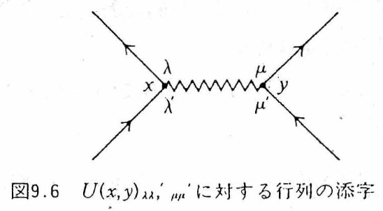
| 図形の要素 | 対応する因子 | 読み方 |
|---|---|---|
| 矢印つき実線 $y\to x$ | $\ii G^0_{\alpha\beta}(x,y)$（$\alpha$ が矢印の先、$\beta$ が根元） | $y$ で入れた粒子（または $x$ で作った正孔）の自由な伝播。1本の線に粒子と正孔の両方の時間順序が入っている |
| 波線 $x_1$—$x_1'$ | $U(x_1,x_1')_{\lambda\lambda',\mu\mu'}=V\,\delta(t_1-t_1')$ | 瞬間的な2体相互作用。等時刻なので水平に描く。両端にそれぞれ「入る線」「出る線」が1本ずつ付く（図C.1） |
| 頂点（黒丸）$x_1$ | $\int\dd^4x_1$ と、その頂点のスピン添字の和 | 相互作用が起きた時空点。位置も時刻もすべて積分される（だから縦位置に意味はない） |
| 外線の端点 $x,\ y$ | 積分しない。$G_{\alpha\beta}(x,y)$ の引数 | 粒子を入れた点・取り出した点 |
| 閉じた実線のループ | 因子 $(-1)$、スピンについてトレース | Fermi 統計の符号。Wick の定理で演算子を並べ替えるとき、ループを作る縮約は必ず奇置換になる |
| 始点と終点が同じ線（等時刻） | $\ii G^0_{\alpha\beta}(\xx t,\xx t^+)=-\bra{\Phi_0}\hat\psi^\dagger_\beta(\xx)\hat\psi_\alpha(\xx)\ket{\Phi_0}=-\delta_{\alpha\beta}\,n/(2s+1)$ | $\Ham_1$ の中で $\hat\psi^\dagger$ が $\hat\psi$ の左にあることから $t^+$ と解釈する（F–W 邦訳 p.102）。一様系では密度 $n$（スピン1成分あたり $n/(2s+1)$） |
| $n$ 次の図形全体 | $(\ii/\hbar)^n(-1)^F$、$F$＝ループ数 | C.4 節で $1/2$ と $1/n!$ が消えたあとに残る係数 |
これで Fetter–Walecka の式(9.1) が読める。1次の項を書き下すと（邦訳 p.101、式(9.1)。各項の下の記号 A〜F は図C.2 の図形に対応）
$$ \begin{equation} \begin{aligned} \ii\tilde G^{(1)}_{\alpha\beta}(x,y)=\frac{-\ii}{\hbar}\,\frac12\sum_{\lambda\lambda'\mu\mu'}\int\!\dd^4x_1\dd^4x_1'\;U(x_1,x_1')_{\lambda\lambda',\mu\mu'}\Big\{ &\ii G^0_{\alpha\beta}(x,y)\big[\underbrace{\ii G^0_{\mu'\mu}(x_1',x_1')\,\ii G^0_{\lambda'\lambda}(x_1,x_1)}_{(A)} -\underbrace{\ii G^0_{\mu'\lambda}(x_1',x_1)\,\ii G^0_{\lambda'\mu}(x_1,x_1')}_{(B)}\big]\\ +\;&\ii G^0_{\alpha\lambda}(x,x_1)\big[\underbrace{\ii G^0_{\lambda'\mu}(x_1,x_1')\,\ii G^0_{\mu'\beta}(x_1',y)}_{(C)} -\underbrace{\ii G^0_{\lambda'\beta}(x_1,y)\,\ii G^0_{\mu'\mu}(x_1',x_1')}_{(D)}\big]\\ +\;&\ii G^0_{\alpha\mu}(x,x_1')\big[\underbrace{\ii G^0_{\mu'\lambda}(x_1',x_1)\,\ii G^0_{\lambda'\beta}(x_1,y)}_{(E)} -\underbrace{\ii G^0_{\mu'\beta}(x_1',y)\,\ii G^0_{\lambda'\lambda}(x_1,x_1)}_{(F)}\big]\Big\}. \end{aligned} \label{eq:C-FW91} \end{equation} $$$\tilde G$ のチルダは「分母 $\bra{\Phi_0}\hat S\ket{\Phi_0}$ で割る前」の意味である（$\ii G=\ii\tilde G/\bra{\Phi_0}\hat S\ket{\Phi_0}$）。
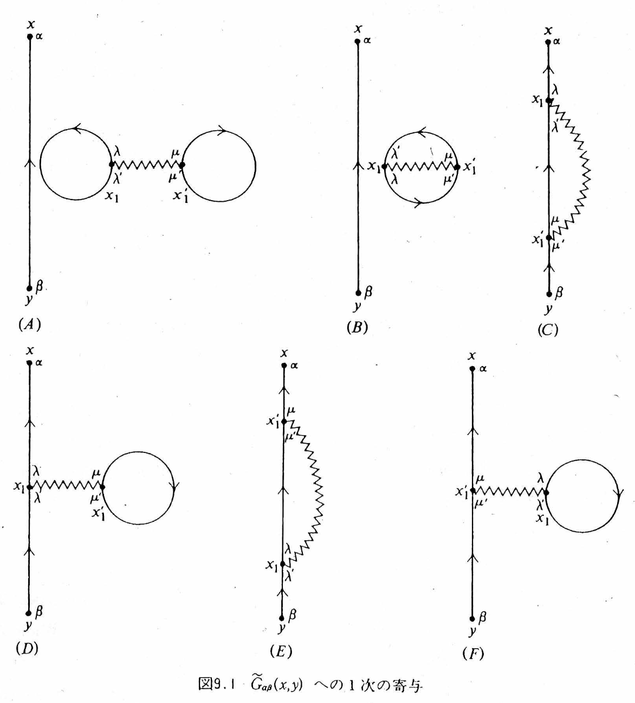
導出C.3：図C.2 の6個を式 \eqref{eq:C-FW91} の6項に翻訳する
表C.2 の辞書で1つずつ読む。どの図形にも「$y$ から $x$ へ至る外線」と「$x_1$–$x_1'$ の波線」が1本ずつあり、違うのは残り2本の実線のつなぎ方だけである。
- (A) $\ii G^0_{\alpha\beta}(x,y)$：外線が $y\to x$ をまっすぐ通る。$\ii G^0_{\lambda'\lambda}(x_1,x_1)$ と $\ii G^0_{\mu'\mu}(x_1',x_1')$：$x_1$ と $x_1'$ のそれぞれで始点＝終点のループ（等時刻＝密度）。2つの密度が波線でつながった「ダンベル」。ループが2個なので符号 $+$。外線と波線の部分はつながっていない。
- (B) $\ii G^0_{\mu'\lambda}(x_1',x_1)\,\ii G^0_{\lambda'\mu}(x_1,x_1')$：$x_1\to x_1'$ と $x_1'\to x_1$ の2本で1つのループ（「牡蠣」）。ループ1個なので符号 $-$。やはり外線とはつながっていない。
- (C) $\ii G^0_{\alpha\lambda}(x,x_1)\,\ii G^0_{\lambda'\mu}(x_1,x_1')\,\ii G^0_{\mu'\beta}(x_1',y)$：$y\to x_1'\to x_1\to x$ と外線が波線の両端を順に通る。交換（Fock）項。ループなし、符号 $+$。
- (D) $\ii G^0_{\alpha\lambda}(x,x_1)\,\ii G^0_{\lambda'\beta}(x_1,y)$ に $\ii G^0_{\mu'\mu}(x_1',x_1')$：外線は $x_1$ だけを通り、$x_1'$ には密度ループが付く。直接（Hartree）項、いわゆる tadpole。ループ1個で符号 $-$。
- (E), (F)：(C), (D) で $x_1\leftrightarrow x_1'$（同時に $\lambda\leftrightarrow\mu$, $\lambda'\leftrightarrow\mu'$）を入れ替えたもの。
(C) の符号を Wick の定理で確かめておく。(C) は縮約 $\hat\psi_\alpha(x)\hat\psi^\dagger_\lambda(x_1)$、$\hat\psi_{\lambda'}(x_1)\hat\psi^\dagger_\mu(x_1')$、$\hat\psi_{\mu'}(x_1')\hat\psi^\dagger_\beta(y)$ からなる。演算子列 $\hat\psi^\dagger_\lambda\hat\psi^\dagger_\mu\hat\psi_{\mu'}\hat\psi_{\lambda'}\hat\psi_\alpha\hat\psi^\dagger_\beta$ をこの3組が隣り合う順 $(\hat\psi_\alpha\hat\psi^\dagger_\lambda)(\hat\psi_{\lambda'}\hat\psi^\dagger_\mu)(\hat\psi_{\mu'}\hat\psi^\dagger_\beta)$ に並べ替えるのに要する互換は偶数個である（演習C.1）。(D) は $\hat\psi_{\mu'}\hat\psi^\dagger_\mu$ をループにするぶん奇置換になり $-$ が付く。「ループ1個につき $-1$」は、この計算の一般化である。
C.4 1次摂動 — 6つの項から2つの図形へ（図C.2〜C.7）
C.4.1 つながっていない図形は分母と相殺する
(A), (B) は「自由な外線」×「外線と無関係な閉じた図形（真空泡）」の積である。積分変数 $x_1,x_1'$ は閉じた部分にしか現れないから、(A)+(B) は $\ii G^0_{\alpha\beta}(x,y)\times[\text{定数}]$ と因数分解する。この因数分解はすべての次数で成り立つ（図C.3）。一方、分母 $\bra{\Phi_0}\hat S\ket{\Phi_0}$ を同じ Wick の定理で展開すると、まさにこの真空泡の和が出てくる（図C.4）。
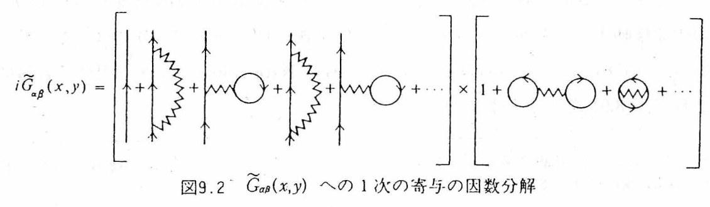
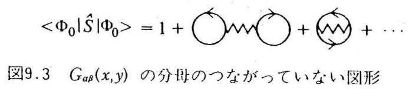
定理C.1（つながった図形の定理、linked-cluster theorem）
$\ii G_{\alpha\beta}(x,y)=\ii\tilde G_{\alpha\beta}(x,y)/\bra{\Phi_0}\hat S\ket{\Phi_0}$ は、外点 $x,y$ とつながった図形だけの和に等しい。真空泡（図C.5 のような、外線とつながらない部分をもつ図形）はすべて分母と相殺して消える。
物理的には当然である。真空泡は「粒子を入れていないときにも起きている基底状態の揺らぎ」で、$\bra{\Phi_0}\hat S\ket{\Phi_0}$ は Gell-Mann–Low の位相因子（第6章）そのものである。粒子を入れたことの差分だけが $G$ に残る。
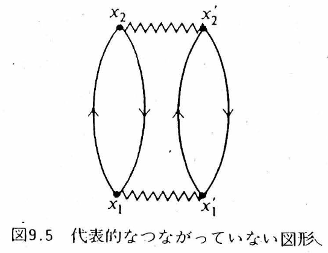
C.4.2 $1/2$ と $1/n!$ が消える
(C) と (E) は、積分変数の名前 $x_1\leftrightarrow x_1'$（と対応するスピン添字）を付け替えると同じ値になる。相互作用の対称性 $U(x_1,x_1')_{\lambda\lambda',\mu\mu'}=U(x_1',x_1)_{\mu\mu',\lambda\lambda'}$ がそれを保証する。(D) と (F) も同様。したがって (C)+(E)$=2\times$(C)、(D)+(F)$=2\times$(D) となり、\eqref{eq:C-FW91} 先頭の $1/2$ が消える。$n$ 次では、$n$ 本の波線の両端の付け替えで $2^n$、$n$ 個の $\Ham_1$ の名前の付け替え（図C.6）で $n!$ が出て、$\frac{1}{n!}\big(\frac12\big)^n$ とちょうど相殺する。
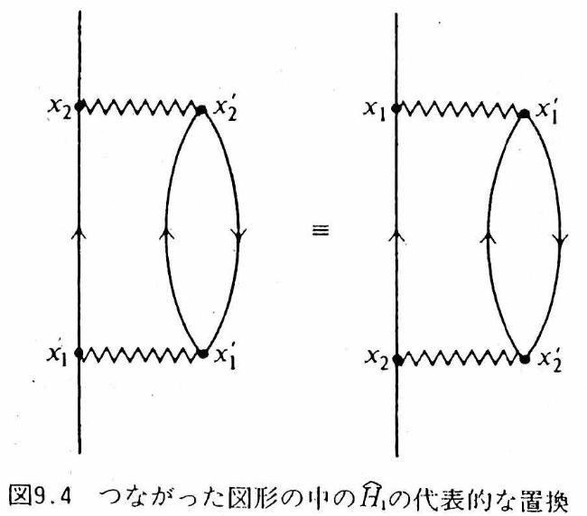
ここまでを、図C.2 の6個について一覧にまとめておく。各行の「代表的な物語」は直観のための一つの時間順序にすぎず、実際には内部時刻と内部座標のすべてについて積分されていることを忘れないでほしい（C.2 節の注意）。
| 図 | 線のつながり方 | 代表的な物語 | 外線との連結 | 行方 |
|---|---|---|---|---|
| (A) | 2つの等時刻密度ループが波線で結ばれた「ダンベル」 | 電子海の2つの密度が直接 Coulomb 相互作用する（基底状態の Hartree エネルギー） | 非連結 | 分母と相殺して消える |
| (B) | 2本の線が1つの閉ループ（「牡蠣」）を作る | 電子海の占有電子どうしの交換振幅（基底状態の Fock エネルギー） | 非連結 | 分母と相殺して消える |
| (C) | 外線が波線の両端を順に通る | 付け加えた電子が、電子海の占有電子と交換する | 連結 | (E) と合わせて $2\times$、$1/2$ を消す → 図C.7(b) |
| (D) | 外線は片方の頂点だけを通り、他方に密度ループ（tadpole） | 付け加えた電子が、電子海の平均密度が作る Coulomb ポテンシャルを感じる | 連結 | (F) と合わせて $2\times$ → 図C.7(a) |
| (E) | (C) の $x_1\leftrightarrow x_1'$ 入れ替え | (C) と同じ | 連結 | (C) と同一の値 |
| (F) | (D) の $x_1\leftrightarrow x_1'$ 入れ替え | (D) と同じ | 連結 | (D) と同一の値 |
(A), (B) が「消える」のは、そこに物理が無いからではない。それは粒子を1個も付け加えなくても存在している基底状態のエネルギー・位相であり、$G$ は「粒子を付け加えたことによる差分」を記述するから、共通の因子として割り落とされるのである。
C.4.3 1次の結果と Feynman 則
以上より、1次の Green 関数は位相幾何学的に異なるつながった図形2個（図C.7）で尽くされ、$\ii$ を整理すると
$$ \begin{equation} G^{(1)}_{\alpha\beta}(x,y)=\frac{\ii}{\hbar}\sum\int\!\dd^4x_1\dd^4x_1'\; G^0_{\alpha\lambda}(x,x_1)\,U(x_1,x_1')_{\lambda\lambda',\mu\mu'} \Big[\underbrace{G^0_{\lambda'\mu}(x_1,x_1')\,G^0_{\mu'\beta}(x_1',y)}_{\text{交換 (b)}} -\underbrace{G^0_{\lambda'\beta}(x_1,y)\,G^0_{\mu'\mu}(x_1',x_1'^{\,+})}_{\text{直接 (a)}}\Big]. \label{eq:C-G1} \end{equation} $$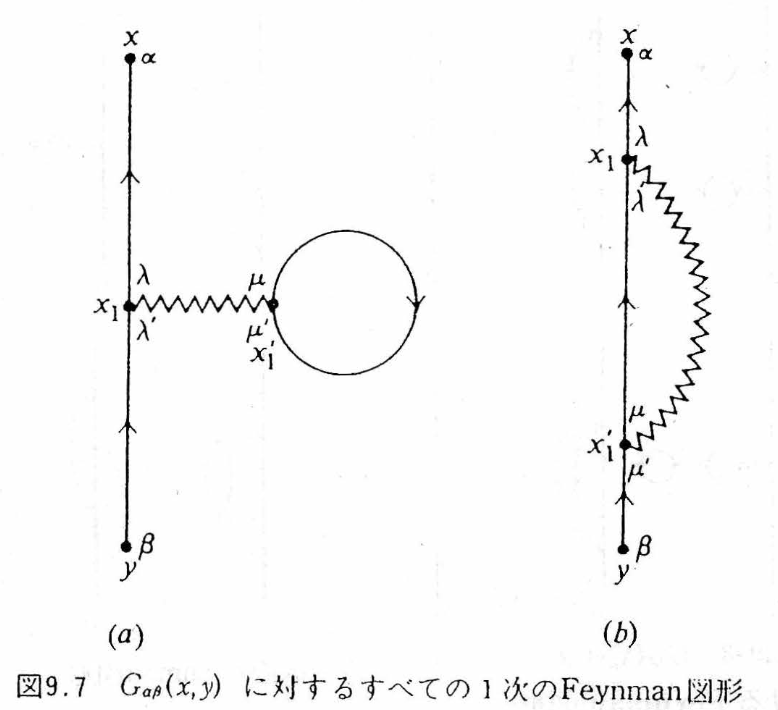
導出C.4：直接項が Hartree ポテンシャルになること
スピンに依らない相互作用 $U=V(\xx_1-\xx_1')\delta(t_1-t_1')\delta_{\lambda\lambda'}\delta_{\mu\mu'}$ と、等時刻の規則 $\ii G^0_{\mu'\mu}(x_1',x_1'^{+})=-\delta_{\mu'\mu}n/(2s+1)$ を \eqref{eq:C-G1} の直接項に入れる。スピン和 $\sum_{\mu\mu'}\delta_{\mu\mu'}\delta_{\mu'\mu}=2s+1$ により
$$ G^{(1a)}_{\alpha\beta}(x,y)=\frac{\ii}{\hbar}\cdot(-1)\cdot\Big(\ii\,\frac{n}{2s+1}\Big)(2s+1)\int\!\dd^4x_1\,G^0_{\alpha\beta}(x,x_1)\Big[\int\!\dd^3x_1'\,V(\xx_1-\xx_1')\Big]G^0(x_1,y) =\int\!\dd^4x_1\,G^0_{\alpha\beta}(x,x_1)\,\frac{nV(\qq=0)}{\hbar}\,G^0(x_1,y). $$すなわち直接項は「平均密度 $n$ が作る静的ポテンシャル $nV(0)$ を1回感じる」補正である。これが Hartree ポテンシャル。交換項も同様に計算でき（C.5 節、式 \eqref{eq:C-Sig1}）、両者を合わせた1次のエネルギー補正は Hartree–Fock そのものになる。Hartree–Fock 近似とは、Feynman 図形の1次で止めることである。
誤解しやすい点：Hartree 項と Fock 項は、時間の前後の違いではない
図C.7 を「縦軸＝時間」の指示どおりに読むと、次のような読み方をしてしまいやすい。
「(a) の tadpole は波線が水平だからある時刻にならないと起こらない。(b) の Fock 項は波線が斜めだから、過去の電子と未来の電子が相互作用している。」
どちらも正しくない。理由は C.2 節の注意そのものである。
- 内部頂点 $x_1,x_1'$ の時刻はすべて積分される。「ある時刻に起こる」出来事は図形のどこにも書かれていない。tadpole の閉ループが表すのは等時刻の密度 $n(\xx_1')$ であって、特定の1時刻に発生する事件ではない。
- 波線の両端は必ず同時刻である（$U\propto\delta(t_1-t_1')$）。(b) で波線が斜めに描かれているのは作図の都合にすぎず、過去と未来をつなぐ相互作用ではない。
では (a) と (b) は何が違うのか。時間ではなく、線のつなぎ方（直接か交換か）が違うのである。
| (a) 直接項＝Hartree | (b) 交換項＝Fock | |
|---|---|---|
| 図形上の事実 | 外線は頂点 $x_1$ だけを通り、$x_1'$ には閉ループが付く | 外線が波線の両端 $x_1$, $x_1'$ を順に通り抜ける |
| 自己エネルギー | $\Sigma_H(\xx)=\displaystyle\int\!\dd^3x'\,V(\xx-\xx')\,n(\xx')$ | $\Sigma_{F,\alpha\beta}(\xx,\xx')=-V(\xx-\xx')\,\rho_{\alpha\beta}(\xx,\xx')$ |
| 物理 | 付け加えた電子が、電子海の平均密度が作る Coulomb ポテンシャルを感じる | 同種 Fermi 粒子の反対称性から生じる交換ポテンシャル。付け加えた電子と占有電子に名札を付けられないため、入れ替えた振幅が符号 $-$ 付きで加わる |
| Fermi ループ | 1個（符号 $-$） | なし（符号 $+$） |
| 非局所性 | $\xx$ について局所（掛け算の演算子） | $\xx,\xx'$ の2点をつなぐ非局所な演算子 |
ここで $\rho_{\alpha\beta}(\xx,\xx')=\braket{\hat\psi^\dagger_\beta(\xx')\hat\psi_\alpha(\xx)}$ は1体密度行列である。どちらも同じ瞬間的な裸の Coulomb 相互作用の1次の寄与であり、先・後の違いではない。direct か exchange か、それだけである。（交換項が非局所であることは、第14章で $V^{\rm eff}$ を非局所に取る動機に直結する。）
この手続きを一般化したものが Feynman 則である。Fetter–Walecka 邦訳 9節に従って並べる。
定義C.1：座標空間の Feynman 則（$G_{\alpha\beta}(x,y)$ の $n$ 次の寄与）
- $n$ 本の相互作用線（波線）と $2n+1$ 本の向きつき Green 関数（実線）をもつ、つながった、位相幾何学的に異なる図形をすべて描く。
- 各頂点に時空点 $x_i$ を割り当てる。各実線に $G^0_{\alpha\beta}(x,y)$（$y\to x$）、各波線に $U(x,y)_{\lambda\lambda',\mu\mu'}$ を対応させる。
- 内部の時空点をすべて積分し、内部のスピン添字をすべて和をとる。
- 閉じた Fermi ループの数を $F$ として $(-1)^F$ を掛ける。
- 全体に $(\ii/\hbar)^n$ を掛ける。
- 始点と終点の時刻が等しい実線は $G^0(\xx t,\xx t^+)$ と解釈する。
C.5 運動量空間と2次摂動 — $G^{(2)}$ の10個の図形（図C.8〜C.12）
C.5.1 運動量空間の Feynman 則
一様系では $G^0(x,y)=G^0(x-y)$、$U(x,y)=U(x-y)$ であり、4次元 Fourier 変換 $G^0(x-y)=\intk{k}\,\ee^{\ii k\cdot(x-y)}G^0(k)$（$k\cdot x\equiv\kk\cdot\xx-\omega t$）で積分が単純化する。各内部頂点には「入る線」の $\ee^{\ii q\cdot x}$、「出る線」の $\ee^{-\ii q'\cdot x}$、波線の $\ee^{\ii q''\cdot x}$ が集まり、$x$ 積分が $(2\pi)^4\delta^{(4)}(q-q'+q'')$ を与える（図C.8、邦訳 式(9.13)）。すなわち各頂点で4元運動量（運動量とエネルギー）が保存する。両端の点 $x,y$ では $q''=q'$ が残り、これが $G(x-y)$ の Fourier 変換の因子 $\ee^{\ii q'\cdot(x-y)}$ になる（図C.9）。
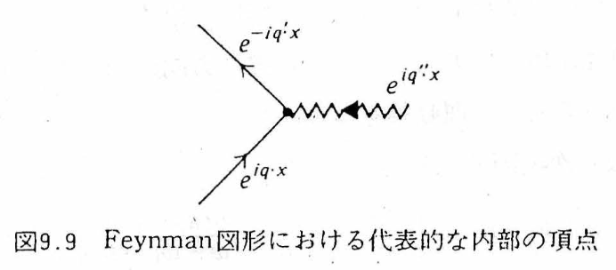
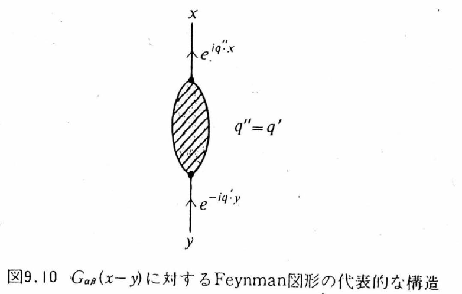
定義C.2：運動量空間の Feynman 則（$G_{\alpha\beta}(\kk,\omega)\equiv G_{\alpha\beta}(k)$ の $n$ 次の寄与）
- $n$ 本の波線と $2n+1$ 本の向きつき実線をもつ、つながった位相幾何学的に異なる図形をすべて描く。
- 各波線に向きを決め、各線に向きつきの4元運動量を割り当て、各頂点で4元運動量を保存させる。
- 各実線に $G^0_{\alpha\beta}(k)=\delta_{\alpha\beta}\Big[\dfrac{\theta(k-k_F)}{\omega-\omega_\kk+\ii\eta}+\dfrac{\theta(k_F-k)}{\omega-\omega_\kk-\ii\eta}\Big]$（邦訳 式(9.14)）、各波線に $U(q)_{\lambda\lambda',\mu\mu'}=V(\qq)_{\lambda\lambda',\mu\mu'}$（瞬間的相互作用は振動数に依らない）を対応させる。
- 独立な内部4元運動量 $n$ 個について $\intk{k_i}$ を行い、内部スピン添字の和をとる。
- $(\ii/\hbar)^n(-1)^F$ を掛ける。
- 自分自身に閉じる実線、または同じ波線の両端を結ぶ実線には収束因子 $\ee^{\ii\omega\eta}$ を付ける（等時刻 $t^+$ の規則の運動量版）。
1次の2つの図形（図C.10）に適用すると、Fetter–Walecka 邦訳 式(9.15) が得られる：
$$ \begin{equation} \begin{aligned} G^{(1)}_{\alpha\beta}(k) &=\ii\hbar^{-1}(-1)\intk{k_1}\,G^0_{\alpha\lambda}(k)\,U(0)_{\lambda\lambda',\mu\mu'}\,G^0_{\lambda'\beta}(k)\,G^0_{\mu'\mu}(k_1)\,\ee^{\ii\omega_1\eta} +\ii\hbar^{-1}\intk{k_1}\,G^0_{\alpha\lambda}(k)\,U(k-k_1)_{\lambda\lambda',\mu\mu'}\,G^0_{\lambda'\mu}(k_1)\,G^0_{\mu'\beta}(k)\,\ee^{\ii\omega_1\eta}\\ &=\ii\hbar^{-1}G^0(k)\Big\{\intk{k_1}\big[-U(0)_{\alpha\beta,\mu\mu}G^0(k_1)\ee^{\ii\omega_1\eta}+U(k-k_1)_{\alpha\mu,\mu\beta}G^0(k_1)\ee^{\ii\omega_1\eta}\big]\Big\}G^0(k). \end{aligned} \label{eq:C-FW915} \end{equation} $$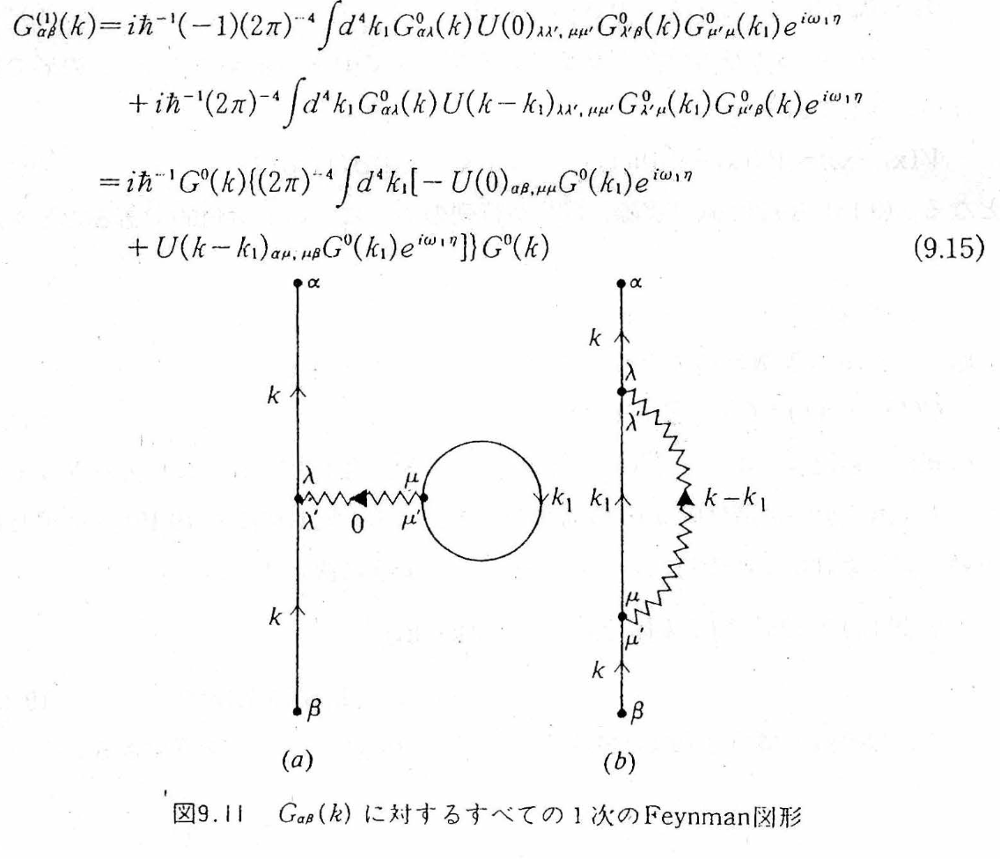
導出C.5：式 \eqref{eq:C-FW915} の振動数積分 — 1次の固有自己エネルギー
$\ee^{\ii\omega_1\eta}$（$\eta\to0^+$）は上半面で減衰するので、$\omega_1$ 積分は上半面で閉じる。\eqref{eq:C-G0} のうち上半面に極をもつのは正孔部分 $\theta(k_F-k_1)/(\omega_1-\omega_{\kk_1}-\ii\eta)$ だけで、留数定理（第5章）より
$$ \int\!\frac{\dd\omega_1}{2\pi}\,G^0(k_1)\,\ee^{\ii\omega_1\eta}=\ii\,\theta(k_F-k_1),\qquad \intk{k_1}\,G^0(k_1)\,\ee^{\ii\omega_1\eta}=\ii\int\!\frac{\dd^3k_1}{(2\pi)^3}\theta(k_F-k_1)=\ii\,\frac{n}{2s+1}. $$スピンに依らない相互作用 $U(q)_{\lambda\lambda',\mu\mu'}=V(\qq)\delta_{\lambda\lambda'}\delta_{\mu\mu'}$ では $U(0)_{\alpha\beta,\mu\mu}=(2s+1)V(0)\delta_{\alpha\beta}$、$U(k-k_1)_{\alpha\mu,\mu\beta}=V(\kk-\kk_1)\delta_{\alpha\beta}$ となるから、$[\cdots]$ の部分は
$$ \begin{equation} \Sig_{(1)}(\kk)=\frac{\ii}{\hbar}\intk{k_1}\big[-(2s+1)V(0)+V(\kk-\kk_1)\big]G^0(k_1)\ee^{\ii\omega_1\eta} =\frac{1}{\hbar}\Big[nV(0)-\int\!\frac{\dd^3k_1}{(2\pi)^3}V(\kk-\kk_1)\,\theta(k_F-k_1)\Big]. \label{eq:C-Sig1} \end{equation} $$第1項が Hartree、第2項が交換（Fock）である。$\epsilon^{(1)}_\kk=\epsilon^0_\kk+\hbar\Sig_{(1)}(\kk)$ は Hartree–Fock の1粒子エネルギーに他ならない（C.6.3、邦訳 式(9.35)）。振動数に依らない（静的）ことに注意：1次では寿命は生じない（$\mathrm{Im}\,\Sig_{(1)}=0$）。
C.5.2 2次摂動：10個の図形
2次では波線2本、実線5本。位相幾何学的に異なるつながった図形は10個ある（図C.11）。Wick の定理で数えれば $5!=120$ の縮約のうち、つながっていないものを除き、付け替えで同値なものを同一視した結果である。
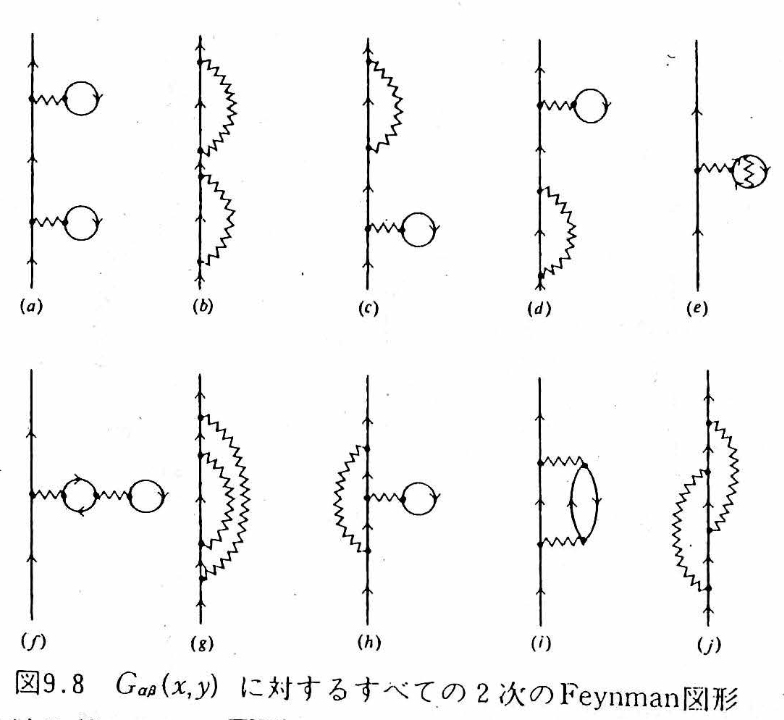
10個は2種類に分かれる。(a)〜(d) は「1本の実線を切ると2つに分かれる」図形で、1次の塊 $\Sig_{(1)}$ を2回使ったものに過ぎない。(e)〜(j) は1本の実線を切っても分かれない——これが2次の固有自己エネルギー $\Sig_{(2)}$ を構成する6個であり、図C.12 の (a)〜(f) と同じものである（対応：図C.11(e)→図C.12(a)、(f)→(b)、(g)→(c)、(h)→(d)、(i)→(e)、(j)→(f)）。
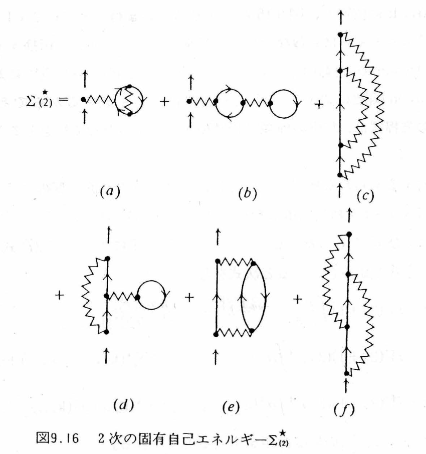
10個を一つずつ読んでおく。名前を付けておくと、後で $\Sig$ の近似を議論するときに「どの図形を残すか」を言葉で言えるようになる。
| 図C.11 | 名前 | 代表的な物語 | 可約性 | 図C.12 |
|---|---|---|---|---|
| (a) | Hartree–Hartree | 付け加えた電子が平均 Hartree 場を感じ、自由に伝播し、もう一度 Hartree 場を感じる：$G^0\Sigma_HG^0\Sigma_HG^0$ | 可約（外線を1本切ると2つに分かれる） | — （$\Sig_{(1)}$ の直列） |
| (b) | Fock–Fock | 交換を受け、伝播し、もう一度交換を受ける：$G^0\Sigma_FG^0\Sigma_FG^0$ | ||
| (c) | H–F 混合1 | Hartree 場と Fock 交換を1回ずつ、この接続順序で | ||
| (d) | H–F 混合2 | (c) と逆の接続順序 | ||
| (e) | 交換入り tadpole | Hartree 場を作る密度ループの中の電子が、さらに別の占有電子と交換している。交換補正された密度が作る Hartree 場 | 固有（切っても分かれない） | (a) |
| (f) | tadpole の tadpole | Hartree 場を作る密度ループが、さらに別の密度ループから Hartree 場を受けている入れ子 | (b) | |
| (g) | rainbow（交換の中の交換） | Fock 交換を担う内部の電子線が、伝播の途中でさらに交換を受ける。(b) と違い、外線ではなく内線が着せ替えられている | (c) | |
| (h) | tadpole つき交換 | Fock 交換の内部電子線が、電子海の Hartree 平均場を受ける | (d) | |
| (i) | 分極ループ挿入 （GW の芽） | 付け加えた電子が電子海に $(\qq,\omega)$ を渡す → Fermi 面下の電子が上へ励起され正孔が残る → 粒子‐正孔対（分極雲）が伝播する → 対が再結合し、反作用が電子に戻る | (e) | |
| (j) | 交差交換 （頂点補正の芽） | 電子が波線 $q$ を出し、続いて $q'$ を出し、先に $q$ を吸収し、最後に $q'$ を吸収する。2つの交換履歴が符号を含んで干渉する | (f) |
注意：図C.11 と図C.12 の記号の対応を取り違えない
両方の図に (a)〜(f) というラベルが付いているので混乱しやすい。「相関の本体」と呼ばれるのは 図C.12 の (e),(f)、すなわち 図C.11 の (i),(j) である。図C.11 の (e),(f) は、Hartree/Fock 図の内部線を Hartree/Fock で着せ替えただけの、静的な構造の再編成にすぎない。以下、式 \eqref{eq:C-Sig2} の添字は図C.12（$\Sig_{(2a)}$〜$\Sig_{(2f)}$）に合わせてあるので、表C.4 の右端の列で読み替えること。
2次の Green 関数（運動量空間、スピンに依らない相互作用）
$$ \begin{equation} G^{(2)}(k)=G^0(k)\Big[\Sig_{(1)}(\kk)\,G^0(k)\,\Sig_{(1)}(\kk)+\Sig_{(2)}(k)\Big]G^0(k),\qquad \Sig_{(2)}=\Sig_{(2a)}+\Sig_{(2b)}+\Sig_{(2c)}+\Sig_{(2d)}+\Sig_{(2e)}+\Sig_{(2f)}. \label{eq:C-G2} \end{equation} $$第1項を展開すると $\Sig_{(1)}=\Sigma_H+\Sigma_x$ の4通りの組合せ（図C.11 (a)〜(d)）が出る。第2項の6つは、定義C.2 の規則から（$g\equiv2s+1$、電子なら $g=2$；$\omega_p$ は4元運動量 $p$ の振動数成分）
$$ \begin{equation} \begin{aligned} \Sig_{(2a)}(k)&=\Big(\frac{\ii}{\hbar}\Big)^2(-g)\,V(0)\intk{p}\intk{p'}\,V(\pp-\pp')\,[G^0(p)]^2\,G^0(p')\,\ee^{\ii\omega_p\eta}\ee^{\ii\omega_{p'}\eta},\\ \Sig_{(2b)}(k)&=\Big(\frac{\ii}{\hbar}\Big)^2(-g)^2\,[V(0)]^2\intk{p}\,[G^0(p)]^2\,\ee^{\ii\omega_p\eta}\intk{p'}\,G^0(p')\,\ee^{\ii\omega_{p'}\eta},\\ \Sig_{(2c)}(k)&=\Big(\frac{\ii}{\hbar}\Big)^2\intk{p}\intk{p'}\,V(\kk-\pp)\,V(\pp-\pp')\,[G^0(p)]^2\,G^0(p')\,\ee^{\ii\omega_{p'}\eta},\\ \Sig_{(2d)}(k)&=\Big(\frac{\ii}{\hbar}\Big)^2(-g)\,V(0)\intk{p}\intk{p'}\,V(\kk-\pp)\,[G^0(p)]^2\,G^0(p')\,\ee^{\ii\omega_{p'}\eta},\\ \Sig_{(2e)}(k)&=\Big(\frac{\ii}{\hbar}\Big)^2(-g)\intk{q}\intk{p}\,[V(\qq)]^2\,G^0(k-q)\,G^0(p)\,G^0(p+q),\\ \Sig_{(2f)}(k)&=\Big(\frac{\ii}{\hbar}\Big)^2\intk{q}\intk{q'}\,V(\qq)\,V(\qq')\,G^0(k-q)\,G^0(k-q-q')\,G^0(k-q'). \end{aligned} \label{eq:C-Sig2} \end{equation} $$各式の作り方を一つだけ追う。(e)：外線 $k$ が頂点で波線 $q$ を放出して $G^0(k-q)$ になる。波線 $q$ はループに入り、ループは $G^0(p)$ と $G^0(p+q)$ の2本（頂点で $p+q$ が保存）。ループからもう1本の波線 $q$ が出て外線に戻り、$G^0(k-q)$ は $k$ に復帰する。波線2本で $[V(\qq)]^2$、ループ1個で $-g$、独立な内部運動量は $q,p$ の2個、$(\ii/\hbar)^2$。(f)：外線が波線 $q$ を出し（$k-q$）、さらに波線 $q'$ を出し（$k-q-q'$）、先に $q$ を吸収し（$k-q'$）、最後に $q'$ を吸収して $k$ に戻る。2本の波線が交差しているのはこの「先に出した方を後で吸収する」順序のためで、ループはない。残りの4つは「1次の塊（$\Sigma_H$ や $\Sigma_x$）を、1次の図形の内線に差し込んだもの」と読めば、同じ規則で書ける（演習C.3）。
補足：Fetter–Walecka に $\Sig_{(2)}$ の式が無いことについて
Fetter–Walecka は図C.12 を描くだけで式を書いていない。式 \eqref{eq:C-Sig2} は定義C.2 の規則を機械的に適用して本付録で書き下したものである。同じ2次の自己エネルギーは、Mattuck の入門書（第10章）や Mahan（第5章、第2次 Born 近似・2次交換項）に図形とともに現れるほか、量子化学の分野では「GF2」の名で、基底関数展開した形の明示式が論文に与えられている（N. E. Dahlen and R. van Leeuwen, J. Chem. Phys. 122, 164102 (2005)；J. J. Phillips and D. Zgid, J. Chem. Phys. 140, 241101 (2014)）。これらは虚時間（第13章の松原形式）で書かれており、$\ee^{\ii\omega\eta}$ の煩わしさがない。読者が自分で検算したいなら、まず \eqref{eq:C-Sig2} の $\Sig_{(2e)}$ と $\Sig_{(2f)}$ の2つ（図C.12 の (e),(f)＝図C.11 の (i),(j)。これが「相関」の本体である）から始めるとよい。
物理的な注意：Coulomb 相互作用では何が起きるか
以下の (a)〜(f) は式 \eqref{eq:C-Sig2}、すなわち図C.12 のラベルである（図C.11 では (f),(e),(g),(h),(i),(j) の順に対応）。（1）$V(0)$ を含む (a),(b),(d) と1次の Hartree 項は、ジェリウム模型では一様な正電荷背景と相殺して消える（付録B.6）。（2）(e) は $V(\qq)=4\pi e^2/q^2$ に対し小さな $q$ で発散する。$[V(\qq)]^2\sim q^{-4}$ に対し、分極ループは $q\to0$ で有限だからである。発散は (e) 型の図形（波線にループを次々と挿入した「環（ring）」図形）を無限次まで足し上げることで初めて消える——これが RPA であり（C.7 節）、さらに G の着せ替えまで含めたものが GW 近似である（C.8 節）。（3）(f) は有限で、2次の「交換相関」の残りを与える。（4）(e),(f) は振動数に依存し、虚部をもつ。ここで初めて寿命 $\gamma_\kk$ が生じる。\eqref{eq:C-FL} の $(\epsilon_\kk-\epsilon_F)^2$ は (e) の虚部を Fermi 面近傍で評価すれば出てくる。（5）逆に、図C.11 の (a)〜(d)（$\Sig_{(1)}$ の直列）と (e)〜(h)（内線の Hartree/Fock 着せ替え）は、いくら重ねても寿命を生まない。$\Sigma_H$ と $\Sigma_F$ が実数かつ振動数に依らない限り、それをいくつ並べても $\Im\Sig=0$ のままだからである（理由は C.6.4 で述べる）。準位と軌道は変わるが、線幅は $0$ である。
C.6 Dyson 方程式 — $\Sigma$ と $\Sig$、くりこみと寿命の帳簿（図C.13〜C.17）
C.6.1 自己エネルギー $\Sigma$ と固有自己エネルギー $\Sig$
どの次数の図形も、両端の外線 $G^0(x,x_1)$ と $G^0(x_1',y)$ を取り去れば「$x_1$ から $x_1'$ までの塊」が残る（図C.13）。この塊の総和を自己エネルギー $\Sigma_{\lambda\mu}(x_1,x_1')$ と呼ぶ：
$$ \begin{equation} G_{\alpha\beta}(x,y)=G^0_{\alpha\beta}(x,y)+\int\!\dd^4x_1\dd^4x_1'\;G^0_{\alpha\lambda}(x,x_1)\,\Sigma_{\lambda\mu}(x_1,x_1')\,G^0_{\mu\beta}(x_1',y). \label{eq:C-Sigma} \end{equation} $$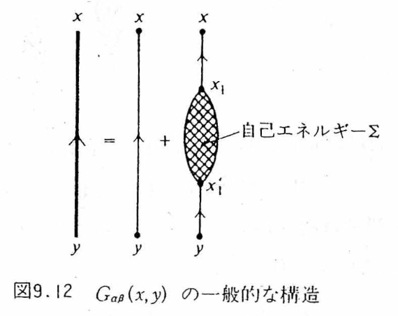
塊 $\Sigma$ の中には、図C.11 (a)〜(d) のように「1本の実線を切ると2つに分かれる」ものが含まれる。切っても分かれないものだけを集めたものを固有自己エネルギー（proper self-energy） $\Sig$ と呼ぶ。すると $\Sigma$ は $\Sig$ を $G^0$ でつないだ級数になる（図C.14、邦訳 式(9.26)）：
$$ \begin{equation} \Sigma(x_1,x_1')=\Sig(x_1,x_1')+\int\!\dd^4x_2\dd^4x_2'\,\Sig(x_1,x_2)G^0(x_2,x_2')\Sig(x_2',x_1') +\int\!\!\int\Sig\,G^0\,\Sig\,G^0\,\Sig+\cdots. \label{eq:C-FW926} \end{equation} $$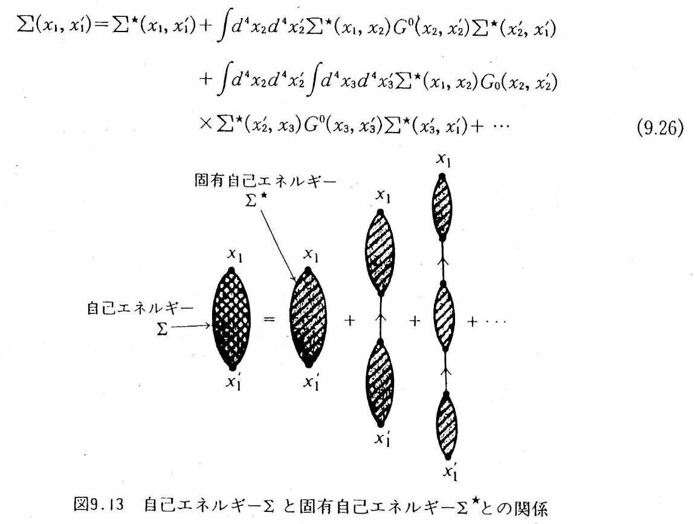
注意：$\Sigma$ と $\Sig$ を混同しないこと
式 \eqref{eq:C-Sigma} の右辺は $G^0\,\Sigma\,G^0$（両側とも細線）であり、$\Sigma$ は「可約な」塊まで含む総和である。一方、多くの教科書や論文で単に「自己エネルギー」と呼ばれ、Dyson 方程式 $G=G^0+G^0\Sigma G$ に入るのは固有自己エネルギー $\Sig$ の方である。Fetter–Walecka は記号を $\Sigma$ と $\Sig$ で区別するが、Mahan や Hedin の論文では $\Sigma$ と書いて固有自己エネルギーを指す。本付録も C.8 節以降は慣例に従い、固有自己エネルギーを $\Sigma$ と書く。
C.6.2 Dyson 方程式
\eqref{eq:C-FW926} を \eqref{eq:C-Sigma} に入れると $G=G^0+G^0\Sig G^0+G^0\Sig G^0\Sig G^0+\cdots$ となり、右辺の2項目以降は $G^0\Sig\,(G^0+G^0\Sig G^0+\cdots)=G^0\Sig G$ とまとまる（図C.15）：
$$ \begin{equation} G_{\alpha\beta}(x,y)=G^0_{\alpha\beta}(x,y)+\int\!\dd^4x_1\dd^4x_1'\;G^0_{\alpha\lambda}(x,x_1)\,\Sig_{\lambda\mu}(x_1,x_1')\,G_{\mu\beta}(x_1',y). \label{eq:C-Dyson} \end{equation} $$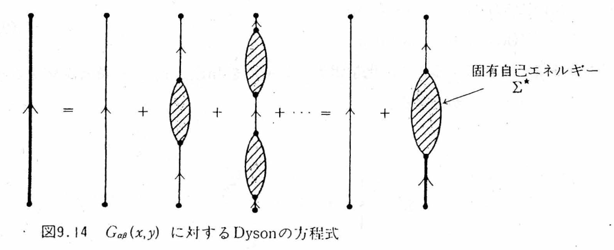
一様系では畳み込みが積になり（$G^0$、$\Sig$ がスピンに依らない場合）
$$ \begin{equation} G(k)=G^0(k)+G^0(k)\Sig(k)G(k)\quad\Longrightarrow\quad G(\kk,\omega)=\frac{1}{[G^0(\kk,\omega)]^{-1}-\Sig(\kk,\omega)}=\frac{1}{\omega-\omega_\kk-\Sig(\kk,\omega)}. \label{eq:C-Dysonk} \end{equation} $$これで C.1.3 の \eqref{eq:C-QPeq} に戻ってきた。$G$ の極は $\omega=\omega_\kk+\Sig(\kk,\omega)$ の解であり、$\mathrm{Re}\,\Sig$ がくりこみ、$\mathrm{Im}\,\Sig$ が寿命を与える。$\Sig$ を1次（図C.16）で止めれば Hartree–Fock、2次（図C.12）まで取れば第2次 Born 近似、(e) 型を無限次まで足せば GW 近似である。Feynman 図形とは、$\Sig$ の計算をどこで打ち切るかを図で宣言する言葉に他ならない。
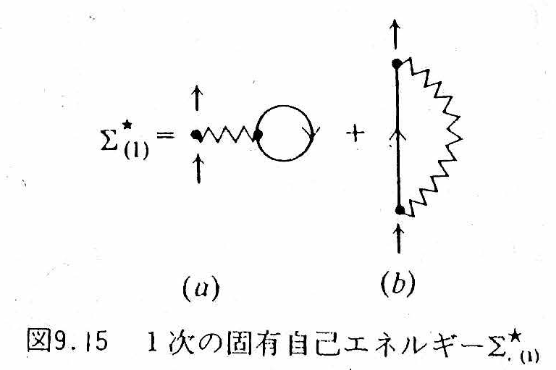
C.6.3 最も簡単な近似：$\Sig\simeq\Sig_{(1)}$（Hartree–Fock）
$\Sig\simeq\Sig_{(1)}$ を Dyson 方程式に入れると、$G$ は図C.17 のように「tadpole と交換を任意の順に任意の個数並べた」図形の無限和になる。$\Sig_{(1)}$ は静的（振動数に依らない）なので $G$ の極は実軸上に留まり、1粒子エネルギーが
$$ \begin{equation} \epsilon^{(1)}_\kk=\epsilon^0_\kk+\hbar\Sig_{(1)}(\kk) =\frac{\hbar^2k^2}{2m}+nV_0(0)-(2\pi)^{-3}\int\!\dd^3k'\,\big[V_0(\kk-\kk')+3V_1(\kk-\kk')\big]\theta(k_F-k') \label{eq:C-FW935} \end{equation} $$にずれる（邦訳 式(9.35)。Fetter–Walecka はスピン依存ポテンシャル $V=V_0+V_1\,\bm\sigma_1\!\cdot\!\bm\sigma_2$ を想定しており、電子気体では $V_1=0$）。くりこみだけが起き、寿命は無限大——C.1.4 の非調和振動子と同じ状況である。
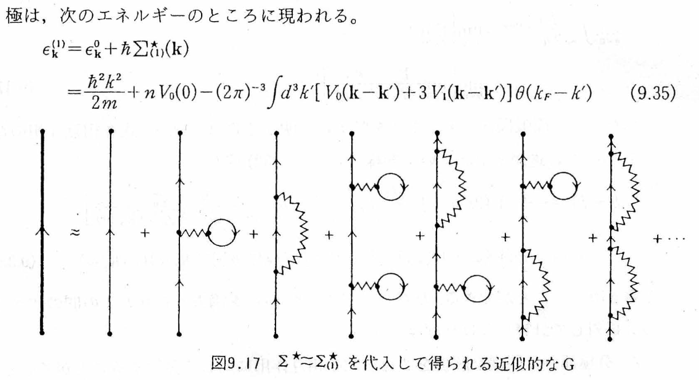
C.6.4 $\delta(t-t')$・「静的」・「寿命無限大」— 三つを区別する
C.6.3 で「$\Sig_{(1)}$ は静的だから寿命は無限大」と書いた。ここは短い一行だが、初学者が最もつまずくところなので、ていねいに分解する。Hartree–Fock 自己エネルギーを時間表示で書くと、たとえば Fock 項は
$$ \begin{equation} \Sigma_F(\xx t,\xx't')=-\,\delta(t-t')\,V(\xx-\xx')\,\rho(\xx,\xx') \label{eq:C-SigF-time} \end{equation} $$である。この $\delta(t-t')$ を見て、「自己エネルギーは $t=t'$ という一瞬にだけ発生するのか」と読んでしまいやすい。そうではない。
(1)「瞬間的」＝記憶を持たないという意味
自己エネルギーが実際に使われるのは、Dyson 方程式の畳み込みの中である：
$$ \int\!\dd t'\;\Sigma(t,t')\,G(t',t_0). $$ここに \eqref{eq:C-SigF-time} を入れると、$\delta$ 関数が $t'$ 積分を潰して
$$ \int\!\dd t'\;\delta(t-t')\,\Sigma_{HF}\,G(t',t_0)=\Sigma_{HF}\,G(t,t_0) $$となる。左辺の $t$ は全時刻を走る変数である。したがってこの式が言っているのは「歴史上ただ一度だけ自己エネルギーが存在する」ことではなく、「どの時刻 $t$ においても、その同じ時刻の状態にだけ作用し、過去の履歴を参照しない」ということである。時間的に局所（time-local）、あるいは記憶を持たない（memoryless）と言う。
(2)「静的（static）」＝振動数に依存しないという意味
時間差 $\tau=t-t'$ について Fourier 変換すると（付録A）$\delta(\tau)\leftrightarrow 1$ だから、時間的に局所な自己エネルギーは
$$ \Sig_{HF}(\omega)=\Sig_{HF}\qquad(\omega\ \text{に依らない}) $$となる。「静的」とは「時間積分してしまったから」ではなく、振動数依存性がないことを指す。$\Sig(\omega)$ が $\omega$ に依存しないということは、\eqref{eq:C-QPeq} の $Z_\kk=[1-\partial\Re\Sig/\partial\omega]^{-1}=1$ でもある：Hartree–Fock では準粒子の重みは 1 のまま、サテライトも生じない。
(3)「寿命無限大」＝虚部がないという意味
\eqref{eq:C-SigF-time} は実数（正確には Hermite）である。したがって $\Im\Sig_{HF}=0$、\eqref{eq:C-QPeq} より $\gamma_\kk=0$、線幅 $0$、寿命 $\infty$。物理的には、C.1.5 で見たとおり崩壊先の連続体が要るからである。Hartree–Fock の自己エネルギーは「平均場を感じる」だけで、付け加えた電子が実際に粒子‐正孔対を励起してエネルギーを渡す過程を含んでいない。渡す相手がいなければ、減衰は起こらない。
三つは論理的に連鎖している：時間的に局所（記憶なし）$\Rightarrow$ 振動数に依存しない（静的）$\Rightarrow$ 実数だから虚部なし $\Rightarrow$ 寿命無限大。逆にいえば、寿命を得るには時間非局所な核、すなわちメモリーが要る。図C.11 の (i)（分極ループ）が最初にそれを与える。
よくある混乱：時間表示の自己エネルギーの「次元」
$\Sigma$ の見かけの次元は、どの変数で書くか・どの Fourier 規約を使うかで変わる。混乱しやすいので整理しておく。
- エネルギー表示 $\Sig(E)$ をエネルギーの次元とし、$\Sigma(t-t')=\int\frac{\dd E}{2\pi\hbar}\ee^{-\ii E(t-t')/\hbar}\Sig(E)$ と定義すれば、時間核 $\Sigma(t-t')$ はエネルギー／時間の次元をもつ。したがって \eqref{eq:C-SigF-time} の $\delta(t-t')$ に掛かる係数はエネルギーの次元になる（$\delta$ が $1/$時間 の次元をもつから、辻褄が合う）。
- 位置表示も同様で、$\int\dd^3x'\,\Sig(\xx,\xx';E)\psi(\xx')$ がエネルギー$\times\psi(\xx)$ になるので、$\Sig(\xx,\xx';E)$ はエネルギー／体積の次元をもつ。
- ただしこれを「自己エネルギー密度」と呼んではいけない。$\Sigma(\xx t,\xx't')$ は時空の2点を結ぶ演算子核であり、局所的なエネルギー密度でも、単位体積あたりに蓄えられたエネルギーでもない。次元が同じであることと、物理的な意味が同じであることは別である。
C.6.5 時間非局所な核とは何か — メモリー核であって、確率分布ではない
2次以降（図C.11 の (i),(j)）では、$\Sigma(t,t')$ はもはや $\delta(t-t')$ では書けない。$t\neq t'$ に広がりをもつ。この「広がり」の意味を、比喩の行き過ぎに注意しながら押さえておきたい。
正しい直観はメモリー（記憶）である。時刻 $t$ における電子の運動が、過去 $t'$ の状態に依存する。物理的な理由もはっきりしている：付け加えた電子が周囲を分極させ、その分極雲が有限の時間をかけて応答し、遅れて電子に反作用するからである。$\delta(t-t')$ から幅のある核へ、という視覚的なイメージは、メモリー時間を掴む入口としては有用である。
誤解しやすい点：時間核は確率分布ではないし、「不確定性」でもない
- Gauss 関数とは限らない。2次以降の時間核は、内部の粒子・正孔がもつ多数の振動数を重ね合わせたものである。一般には複素振動・指数減衰・べき減衰・複数の時間尺度・符号変化を含む。正値の Gauss 分布に固定して考えると、後で必ず行き詰まる。
- 確率分布ではない。$\Sigma(t,t')$ は $\int\dd t'\,\Sigma(t,t')G(t',t_0)$ という形で働く複素数値の応答核（メモリー核）であって、確率密度ではない。したがって「自己エネルギーの不確定性」「時間幅＝ゆらぎの大きさ」という読み替えは成り立たない。
- 時間幅そのものが寿命を作るのではない。時間非局所性は Fourier 空間で振動数依存性 $\Sig(\omega)$ を生む。だが有限寿命が出るには、それに加えてエネルギー保存を満たす実在の終状態（粒子‐正孔連続体など）へ崩壊できる必要がある。終状態が開いて初めて $\Im\Sigma^{\star R}\neq0$ になる。絶縁体でギャップの内側にある準粒子が、$\Sig$ が振動数依存であっても厳密に無限寿命であるのはこのためである（第14章 14.6.3 に、積分路の図でこの閾値が現れる例がある）。
- 1粒子寿命と電気抵抗は別物である。$-\Im\Sig$ が大きいほどスペクトルのピークは広がるが、電気抵抗は電流の緩和を測る量である。散乱角の重み（前方散乱は電流をほとんど変えない）、運動量保存、Umklapp、不純物、そして頂点補正（C.8 節）を含む輸送計算が要る。「時間核の幅が広い → 自己エネルギーが大きい → 抵抗が大きい」という連鎖は成立しない。
C.7 有効相互作用と分極 — 波線も着せ替える（図C.18〜C.20）
実線を $G^0\to G$ に「着せ替えた」のと同じことが波線にもできる。波線 $U_0$ の途中に粒子‐正孔ループ（分極）が挿入された図形を全部集めて有効相互作用 $U$ と呼ぶ（図C.18）。挿入される塊の総和が分極（polarization） $\Pi$ である。
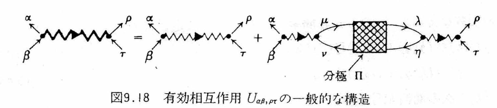
自己エネルギーと同様に、「1本の波線を切ると2つに分かれる」非固有な分極と、分かれない固有分極 $\Pi^\star$ を区別する（図C.19）。すると $U$ に対する Dyson 方程式が得られる（図C.20、邦訳 式(9.40)）：
$$ \begin{equation} U(q)_{\alpha\beta,\rho\tau}=U_0(q)_{\alpha\beta,\rho\tau}+U_0(q)_{\alpha\beta,\mu\nu}\,\Pi^\star_{\mu\nu,\eta\lambda}(q)\,U(q)_{\eta\lambda,\rho\tau}. \label{eq:C-FW940} \end{equation} $$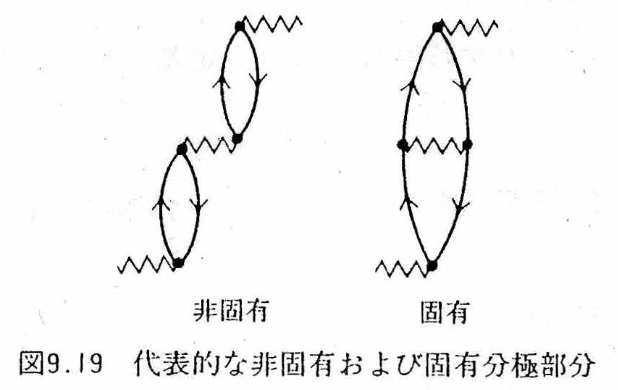
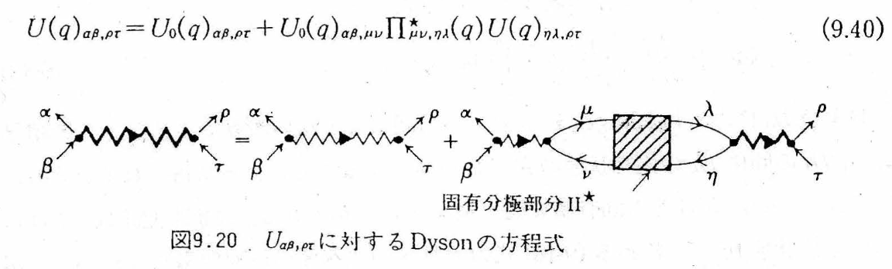
スピンに依らない場合、\eqref{eq:C-FW940} は $U(q)=U_0(q)/[1-U_0(q)\Pi^\star(q)]$ と解ける。$\Pi^\star$ を最低次の1ループ $\Pi^0$（図C.12(e) の中のループ）で置き換える近似が RPA（乱雑位相近似）であり、
$$ \begin{equation} U^{\rm RPA}(\qq,\omega)=\frac{U_0(\qq)}{1-U_0(\qq)\Pi^0(\qq,\omega)}\equiv\frac{U_0(\qq)}{\epsilon^{\rm RPA}(\qq,\omega)} \label{eq:C-RPA} \end{equation} $$の分母が第9〜11章の誘電関数 $\epsilon(\qq,\omega)=1-v(q)\chi^0(\qq,\omega)$ である（$\Pi^0$ と Lindhard 関数 $\chi^0$ は $\hbar$ や符号の規約を除いて同じもの。第10章参照）。つまり第IV部で扱った遮蔽・プラズモンは、Feynman 図形の言葉では「波線に粒子‐正孔ループを無限個挿入した和」である。Coulomb 相互作用で (e) 型の図形が発散した（C.5.2）のは、この無限和を途中で切ったからであり、\eqref{eq:C-RPA} の形にまとめれば $q\to0$ で $U^{\rm RPA}\to U_0/\epsilon$ は有限（遮蔽される）。
C.8 GW 近似と頂点補正 $\Sigma=\ii GW\Gamma$
C.8.1 Hedin の5本の方程式
C.6 と C.7 を合わせると、「実線を $G$ に、波線を $W$（遮蔽された相互作用；C.7 の $U$ のこと。以下、固体物理の慣例に従い $W$ と書く）に着せ替えた上で、$\Sigma$ を $G$ と $W$ で書く」という閉じた方程式系が作れる。Hedin（1965）がこれを整理した。以下この節では慣例に従い $\hbar=1$ とし、$1\equiv(\xx_1,t_1)$、$\int\dd(3)\equiv\int\dd^3x_3\dd t_3$ と略記し、固有自己エネルギーを単に $\Sigma$ と書く。
$$ \begin{equation} \begin{aligned} \Sigma(1,2)&=\ii\int\!\dd(34)\,G(1,3)\,W(1^+,4)\,\Gamma(3,2;4) &&\text{（自己エネルギー）}\\ W(1,2)&=v(1,2)+\int\!\dd(34)\,v(1,3)\,P(3,4)\,W(4,2) &&\text{（遮蔽された相互作用；\eqref{eq:C-FW940} と同じ）}\\ P(1,2)&=-\ii\int\!\dd(34)\,G(1,3)\,G(4,1^+)\,\Gamma(3,4;2) &&\text{（固有分極）}\\ \Gamma(1,2;3)&=\delta(1,2)\delta(1,3)+\int\!\dd(4567)\,\frac{\delta\Sigma(1,2)}{\delta G(4,5)}\,G(4,6)\,G(7,5)\,\Gamma(6,7;3) &&\text{（頂点関数）}\\ G(1,2)&=G^0(1,2)+\int\!\dd(34)\,G^0(1,3)\,\Sigma(3,4)\,G(4,2) &&\text{（Dyson 方程式；\eqref{eq:C-Dyson}）} \end{aligned} \label{eq:C-Hedin} \end{equation} $$この5本は厳密である（摂動展開を並べ替えただけで、何も捨てていない）。新顔は頂点関数 $\Gamma(1,2;3)$ だけである。図形で言えば、$\Gamma$ は「波線が実線に刺さる点（頂点）」の周りに付く全ての補正——頂点のすぐ近くで実線と波線がさらに絡み合う図形——の総和である。
C.8.2 GW 近似：$\Gamma=1$
$\Gamma(1,2;3)\simeq\delta(1,2)\delta(1,3)$（裸の頂点）と置くのが GW 近似である。すると
$$ \begin{equation} \Sigma^{GW}(1,2)=\ii\,G(1,2)\,W(1^+,2),\qquad P^{\rm RPA}(1,2)=-\ii\,G(1,2)\,G(2,1^+). \label{eq:C-GW} \end{equation} $$図形に翻訳する。$W=v+vPv+vPvPv+\cdots$ を $\Sigma=\ii GW$ に代入すると、第1項 $\ii Gv$ は交換（Fock）項、第2項 $\ii G\,vP^0v$ は図C.12(e)（波線にループを1個挿入した交換項）、第3項はループ2個、……。すなわち
物理的な物語：図C.12(e)（＝図C.11(i)）で何が起きているか
この図形が「GW の芽」と呼ばれる理由を、直観的な一つの時間順序で書き下しておく（実際にはすべての順序が積分されていることは、C.2 節のとおりである）。
- 付け加えた電子が、電子海に運動量 $\qq$ とエネルギー $\hbar\omega$ を渡す（波線）。
- Fermi 面より下にいた電子が、Fermi 面より上へ励起される。
- もとの場所に正孔が残る。ここまでで粒子‐正孔対が1つできた。
- 粒子‐正孔対＝分極雲が、しばらく伝播する（ループの2本の実線）。
- 粒子と正孔が再結合し、$(\qq,\omega)$ を返す（2本目の波線）。
- その反作用が、もとの電子に戻ってくる。
この一往復が $v\,\Pi^0\,v$ である。同じことが2回、3回…と起これば $v\Pi^0v\Pi^0v,\ \dots$ となり、全部足すと $W=v/(1-v\Pi^0)$、すなわち遮蔽された相互作用になる。第9〜11章で「外から電荷を持ち込むと電子が押しのけられ、押しのけられた電子が新しい場を作り…」と自己無撞着に解いた遮蔽が、図形の言葉ではこの無限和である。ステップ 2〜3 は実在の終状態を作れるので、エネルギー保存が許す領域では $\Im\Sig\neq0$ となり、ここで初めて寿命が生じる（C.6.5 の項目3）。
GW 近似＝交換項の波線を、粒子‐正孔ループ（環）を無限個挿入した遮蔽相互作用 $W$ に置き換えたもの。「遮蔽された交換（screened exchange）」とも呼ぶ。図C.12 の6項のうち (e) を無限次まで足し、(f)（交差した交換）を捨てている。
Hartree–Fock の交換項は裸の Coulomb 相互作用 $v(q)=4\pi e^2/q^2$ を使うため、金属の Fermi 面で状態密度が対数的にゼロになるなど、よく知られた病気をもつ。GW はこれを $W=v/\epsilon$ で治し、半導体・絶縁体のバンドギャップを実験値の 10% 程度で再現する。実用上は以下の段階がある（VASP wiki「Practical guide to GW calculations」に沿う）：
| 名称 | 何を自己無撞着にするか | 特徴 |
|---|---|---|
| $G_0W_0$ | 何もしない（DFT の軌道・固有値から $G_0$, $W_0$ を1回作る） | 最も安価。出発点（LDA/PBE/ハイブリッド）への依存性が残る。準粒子方程式は \eqref{eq:C-QPlin} の線形化で解く |
| $GW_0$ | $G$ の固有値だけを更新し、$W$ は固定 | ギャップが少し開く。多くの半導体で実験に最も近いことが経験的に知られる |
| $GW$（固有値自己無撞着） | $G$ と $W$ の固有値を更新 | $W$ の遮蔽が弱まり、ギャップを過大評価しがち（$\Gamma=1$ の矛盾が顕在化、C.8.4） |
| QP$GW$ / QP$GW_0$、QSGW | 固有値に加えて軌道も準粒子ハミルトニアンで更新 | 出発点依存性が消える。$Z$ 因子を 1 に置く流儀（C.8.4 の $Z$–$\Gamma$ 相殺）。小谷らの QSGW は第14章で詳述 |
| $GW\Gamma$（頂点補正つき） | $P$ や $\Sigma$ に $\Gamma\neq1$ の効果を入れる | TDDFT の核 $f_{xc}$ で $W$ の中に電子‐正孔相互作用を入れる（TC-TC 法など）。絶対エネルギーが動く（C.8.4） |
C.8.3 準粒子方程式と $Z$ 因子
$G_0W_0$ では DFT の Kohn–Sham 固有値 $\epsilon_i$・軌道 $\phi_i$ から出発し、$V_{xc}$ を $\Sigma$ で置き換えた準粒子方程式を解く。$\Sigma(\omega)$ の対角要素を $\omega=\epsilon_i$ の周りで Taylor 展開すると
$$ \begin{equation} G\simeq\frac{\ket{\phi_i}\bra{\phi_i}}{\omega-\epsilon_i-\big[\Sigma_{ii}(\omega)-V_{xc,ii}\big]} \;\longrightarrow\; \epsilon_i^{\rm QP}=\epsilon_i+Z_i\big[\Sigma_{ii}(\epsilon_i)-V_{xc,ii}\big],\qquad Z_i=\Big[1-\frac{\partial\,\mathrm{Re}\,\Sigma_{ii}}{\partial\omega}\Big|_{\epsilon_i}\Big]^{-1}. \label{eq:C-QPlin} \end{equation} $$これは \eqref{eq:C-QPeq} の実用版である。$Z_i$ は典型的な $sp$ 半導体・単純金属で $0.6\sim0.8$ 程度で、準粒子ピークの重みの $20\sim40\%$ がプラズモンサテライトに流れていることを意味する。
C.8.4 頂点補正 $\Gamma$ とは何か、なぜ要るのか
$\Gamma$ の物理的な意味から述べる。$\Sigma=\ii GW\Gamma$ の「$W$ が実線に刺さる頂点」とは、付け加えた電子が周囲の電子気体を分極させ（粒子‐正孔対を作り）、その分極と相互作用する点である。$\Gamma=1$ は「分極を作った電子と、できた粒子‐正孔対は、その後互いに無関係に振る舞う」という近似である。実際には、電子と正孔は引き合い（励起子効果）、電子と電子は Pauli 原理で避け合う。$\Gamma$ はこの頂点の近くで起きる追加の相互作用をすべて集めたもので、最低次の寄与が図C.12(f)（自己エネルギー側）と図C.19 右（分極側）である。
なぜ省略できないことがあるのか。理由を4つ挙げる。
理由1：方程式系としての整合性（Ward 恒等式）
\eqref{eq:C-Hedin} の第4式は、$\Sigma$ を何らかの近似で決めた瞬間に $\Gamma=1+(\delta\Sigma/\delta G)GG\Gamma$ を通じて $\Gamma\neq1$ を要求する。$\Sigma=\ii GW$ と置きながら $\Gamma=1$ と置くのは、自分で決めた $\Sigma$ と矛盾した頂点を使っていることになる。この矛盾は電荷保存則（連続の方程式、付録B.7）を表す Ward 恒等式の破れとして現れる。その帰結として、$G$ を自己無撞着に着せ替えた GW は、$W$ の中のプラズモンを不当に弱め・広げ、バンド幅やスペクトルをかえって悪化させる（Holm–von Barth 1998）。
理由2：$Z$ 因子と $\Gamma$ の相殺 — なぜ $G_0W_0$ は「裸の」$G_0$ で良いのか
相互作用のある $G$ は $G\simeq Z\,G_{\rm QP}+G_{\rm incoh}$ と書ける（\eqref{eq:C-QP}）。一方 Ward 恒等式は、Fermi 面近傍の頂点関数が $\Gamma\simeq1/Z$ であることを示す（$\Gamma$ は $G^{-1}$ の $\omega$ 微分に関係し、$\partial G^{-1}/\partial\omega=1/Z$）。したがって
$$ \Sigma=\ii\,GW\Gamma\simeq\ii\,(Z\,G_{\rm QP})\,W\,\Big(\frac1Z\Big)=\ii\,G_{\rm QP}W . $$$G$ を着せ替えて $Z$ を入れるなら、同時に $\Gamma\simeq1/Z$ も入れなければならない。両方入れると相殺して、結局「重み 1 の準粒子 Green 関数に裸の頂点」に戻る。これが、$G_0W_0$ や QP$GW$ で $Z=1$ の Green 関数を使う正当化であり、逆に「$G$ だけ自己無撞着にして $\Gamma=1$ のまま」が理由1の悪化を招く理由でもある（Mahan–Sernelius 1989；Del Sole–Reining–Godby 1994）。
理由3：分極側の頂点補正＝電子‐正孔相互作用（励起子効果）
$P=-\ii GG\Gamma$ の $\Gamma$ は、粒子‐正孔ループの中で電子と正孔が相互作用する梯子（ladder）図形を生む（図C.19 右が最低次）。光吸収スペクトルの励起子ピークはこれなしには出ない（Bethe–Salpeter 方程式）。さらに、$W$ 自身の遮蔽にも電子‐正孔引力は効く。固有値自己無撞着 GW がギャップを過大評価するのは $W$ の遮蔽が弱すぎるためで、$W$ に $f_{xc}$ を通じて電子‐正孔相互作用（頂点補正）を入れると実験値に戻る（Shishkin–Marsman–Kresse 2007）。
理由4：バンドギャップは相殺で救われるが、絶対エネルギーは救われない
$\Sigma$ 側の頂点補正と $P$ 側の頂点補正は、価電子帯と伝導帯を同じ向きに動かす傾向があり、ギャップへの正味の効果は小さい（$0.1\,\mathrm{eV}$ 程度；Del Sole–Reining–Godby 1994）。これが「GW でギャップが良く出る」理由の一つである。しかしイオン化ポテンシャル・電子親和力・バンドアラインメントのような絶対位置は相殺の恩恵を受けず、頂点補正を入れると $0.5\,\mathrm{eV}$ 程度動く（Grüneis–Kresse–Hinuma–Oba 2014）。半導体界面のバンドオフセットや光触媒のバンド端位置を議論するときには無視できない。
注意：波線の「交差」は、過去と未来が相互作用したという意味ではない
図C.12(f)（＝図C.11(j)）では2本の波線が交差して描かれている。これを「時間をまたいだ相互作用」と読んではいけない。交差が表しているのは、線の接続順序だけである：外線が波線 $q$ を放出し、続いて $q'$ を放出し、先に出した $q$ を先に吸収し、最後に $q'$ を吸収する——この順序で結ぶと、紙の上では2本の波線が交差する。それだけのことである。
物理的には、同種 Fermi 粒子には名札が付けられないため、「どの相互作用がどの電子との間で起きたか」を追う複数の履歴が存在し、それらが符号を含んだ量子振幅として干渉する。図C.12(e) のように波線に分極ループを挿入していく操作をいくら繰り返しても、この交差図形は作れない。だからこそ $\Gamma=1$（裸の頂点）では取りこぼされ、$\Gamma$ の最初の非自明な補正 $\Gamma^{(1)}$ になる。これが「頂点補正の芽」の意味である。
まとめると、頂点補正とは「$\Sigma=\ii GW\Gamma$ の $\Gamma$」という1文字に押し込められた、図C.12(f) 型（交差した交換）と図C.19 右型（梯子）の全図形である。GW はそれを捨てる近似であり、捨てて良い理由（$Z$–$\Gamma$ 相殺、ギャップでの相殺）と、捨てると困る場面（自己無撞着化、励起子、絶対エネルギー）を区別して覚えておけばよい。
C.9 非調和振動子で手を動かす — $\lambda\hat x^N$ の1次・2次摂動
C.1.4 で、非調和振動子を「くりこみは起きるが寿命は生じない」例として持ち出した。あそこでは $\hat x^4$ の対角要素だけを結果として引用したが、この節では計算のやり方そのものを、$N=3,4,5,6$ について最後まで書き下す。理由は三つある。
- この付録で使ってきた道具——生成消滅演算子、Wick の定理、「経路を数える」という発想——が、1自由度の系で全部そのまま使える。多体系に入る前の練習台として、これ以上のものはない。
- $\lambda\hat x^N$ の摂動論は、Feynman が『統計力学』で扱った古典的な例題である。実際、$\lambda\hat x^3$ は3点頂点、$\lambda\hat x^4$ は4点頂点をもつ「0次元の場の理論」であり、ここで数える経路は、C.3〜C.5 節で数えた Feynman 図形の最小版そのものである。
- 手で完結する。多体系では $\Sig$ を計算するのに数値計算が要るが、ここでは紙と鉛筆で厳密解が出る。自分の計算が合っているかどうかを、自分で確かめられる。
C.9.1 設定 — 何を計算するのか
調和振動子に $N$ 次の非調和項を加える：
$$ \begin{equation} \Ham=\underbrace{\frac{\hat p^2}{2m}+\frac{m\omega^2}{2}\hat x^2}_{\Ham_0}+\underbrace{\lambda\hat x^N}_{\Ham'}, \qquad N=3,4,5,6. \label{eq:C-anh-H} \end{equation} $$$\Ham_0$ の固有値・固有状態は既知である：$\Ham_0\ket{\phi_n}=E_n^{(0)}\ket{\phi_n}$、$E_n^{(0)}=(n+\tfrac12)\hbar\omega$。生成・消滅演算子を使って
$$ \begin{equation} \hat x=x_0\,(\hat a+\hat a^\dagger)\equiv x_0\hat A,\qquad x_0\equiv\sqrt{\frac{\hbar}{2m\omega}}, \label{eq:C-anh-x} \end{equation} $$と書く。以下、$\hat A\equiv\hat a+\hat a^\dagger$ と略記する。必要な道具はこれだけである（付録B.2）：
Rayleigh–Schrödinger の摂動論（縮退なし）により、
$$ \begin{equation} E_n=E_n^{(0)}+\underbrace{\bra{\phi_n}\Ham'\ket{\phi_n}}_{E_n^{(1)}} +\underbrace{\sum_{m\neq n}\frac{\abs{\bra{\phi_m}\Ham'\ket{\phi_n}}^2}{E_n^{(0)}-E_m^{(0)}}}_{E_n^{(2)}}+\cdots \label{eq:C-anh-RS} \end{equation} $$$\Ham'=\lambda x_0^N\hat A^N$ であり、$E_n^{(0)}-E_m^{(0)}=(n-m)\hbar\omega$ だから、$m=n+k$ と置いて
やるべきことはただ一つ、行列要素 $\bra{\phi_{n+k}}\hat A^N\ket{\phi_n}$ を求めることである。$\hat A$ は $n$ を $\pm1$ しか動かさないので、$\hat A^N$ が結ぶのは $\abs{k}\le N$ かつ $N-\abs{k}$ が偶数の場合だけ。したがって和は有限項で終わる。
次元の確認
$[x_0]=$ 長さ、$[\lambda]=$ エネルギー／長さ$^N$ だから $\lambda x_0^N$ はエネルギー。$\hat A$ は無次元。$E^{(2)}$ には $\hbar\omega$ で割る分が入るので、$\lambda^2x_0^{2N}/\hbar\omega$ でやはりエネルギーになる。$S_N(n)$ は無次元の整数係数多項式である。
C.9.2 方法1：経路を数える — Feynman 図形の原型
$\hat A^N=(\hat a+\hat a^\dagger)^N$ を展開すると $2^N$ 個の項が出る。各項は「$\hat a$ か $\hat a^\dagger$ か」を $N$ 回選んだもの、すなわち$N$ ステップの $\pm1$ の経路である。\eqref{eq:C-anh-ladder} より、準位 $\ell$ から
- 1段上がる（$\hat a^\dagger$）と因子 $\sqrt{\ell+1}$
- 1段下がる（$\hat a$）と因子 $\sqrt{\ell}$（$\ell=0$ から下がる経路は消える）
これは C.3 節で Feynman 図形を「線のつなぎ方を数える帳簿」と呼んだのと、まったく同じ発想である。実際にやってみよう。
導出C.6：$\bra{\phi_n}\hat A^4\ket{\phi_n}$ を6本の経路から
$N=4$、$k=0$ なら、上昇2回・下降2回の並べ方 $\binom42=6$ 通りが経路の全部である。
各経路の因子を足すと
$$ (n+1)(n+2)+(n+1)^2+2n(n+1)+n^2+n(n-1)=6n^2+6n+3=3(2n^2+2n+1). $$∎ C.1.4 で結果だけ引用した $\bra{\phi_n}(\hat a+\hat a^\dagger)^4\ket{\phi_n}=6n^2+6n+3$ が、これで自前で出た。
導出C.7：$\bra{\phi_{n+1}}\hat A^3\ket{\phi_n}$ を3本の経路から
$N=3$、$k=+1$ なら上昇2回・下降1回、$\binom31=3$ 通り。
| 経路 | 準位の推移 | 因子 |
|---|---|---|
| $++-$ | $n\to n{+}1\to n{+}2\to n{+}1$ | $\sqrt{n{+}1}\cdot\sqrt{n{+}2}\cdot\sqrt{n{+}2}=(n{+}2)\sqrt{n{+}1}$ |
| $+-+$ | $n\to n{+}1\to n\to n{+}1$ | $\sqrt{n{+}1}\cdot\sqrt{n{+}1}\cdot\sqrt{n{+}1}=(n{+}1)\sqrt{n{+}1}$ |
| $-++$ | $n\to n{-}1\to n\to n{+}1$ | $\sqrt{n}\cdot\sqrt{n}\cdot\sqrt{n{+}1}=n\sqrt{n{+}1}$ |
合計 $=\big[(n{+}2)+(n{+}1)+n\big]\sqrt{n+1}=3(n+1)\sqrt{n+1}=3(n+1)^{3/2}$。∎
落とし穴：$\hat n$ と $\hat a$ の順序を入れ替えてはいけない
$\hat A^3$ を演算子の恒等式として整理するとき、次のように書きたくなる：
$$ \hat A^3\stackrel{?}{=}\hat a^3+\hat a^{\dagger3}+(3\hat n+1)(\hat a+\hat a^\dagger)\qquad\textbf{（誤り）}. $$$\hat n$ と $\hat a,\hat a^\dagger$ は可換ではない（$[\hat n,\hat a]=-\hat a$、$[\hat n,\hat a^\dagger]=+\hat a^\dagger$）ので、$\hat n$ をどちら側に置くかで答えが変わってしまう。$n=0$ で試せばすぐ分かる。直接計算すると
$$ \hat A^3\ket{\phi_0}=3\ket{\phi_1}+\sqrt6\,\ket{\phi_3} $$（導出C.7 で $n=0$ とすれば係数 $3$、上昇3連続で $\sqrt{1\cdot2\cdot3}=\sqrt6$）。ところが上の「誤り」の式は $(3\hat n+1)\hat a^\dagger\ket{\phi_0}=(3\hat n+1)\ket{\phi_1}=4\ket{\phi_1}$ を与えてしまう。正しい恒等式は、$\hat a f(\hat n)=f(\hat n+1)\hat a$、$f(\hat n)\hat a^\dagger=\hat a^\dagger f(\hat n+1)$ に注意して8項を並べ替えると
である（第3項と第4項は互いに Hermite 共役）。$n=0$ で $3\hat a^\dagger(\hat n+1)\ket{\phi_0}=3\ket{\phi_1}$、確かに合う。
この取り違えの代償は小さくない。誤った式では $\bra{\phi_{n\pm1}}\hat A^3\ket{\phi_n}$ が $(3n+1)\sqrt{n{+}1}$、$(3n+1)\sqrt{n}$ となり、2次摂動が
$$ S_3^{\text{（誤）}}(n)=-3(4n^2+3n+1)=-(12n^2+9n+3) \quad\text{に対し}\quad S_3(n)=-(30n^2+30n+11) $$——基底状態で $-3$ 対 $-11$、3倍以上ずれる。順序に迷ったら、$n=0$ か $n=1$ で数値を当てて検算する。これは多体系の $\Sig$ の計算でも同じで、最も確実な自己点検法である。
C.9.3 方法2：正規順序化 — これがそのまま Wick の定理
経路を数える方法は確実だが、$N$ が大きいと $2^N$ 本の経路を扱うのが面倒になる。対角要素だけなら、はるかに速い方法がある。$\hat A$ を場の演算子だと思って Wick の定理（付録B.10、C.3.1）を使うのである。
$\hat A=\hat a+\hat a^\dagger$ の「縮約」は
$$ \overbrace{\hat A\,\hat A}^{\text{縮約}}\;\longrightarrow\;\bra{\phi_0}\hat A\hat A\ket{\phi_0}=\bra{\phi_0}\hat a\hat a^\dagger\ket{\phi_0}=1 $$である（正規順序 $:\!\hat A^2\!:\,=\hat a^{\dagger2}+2\hat a^\dagger\hat a+\hat a^2$ の真空期待値はゼロだから）。Wick の定理は「$N$ 個の $\hat A$ の積を、正規順序項＋1組縮約＋2組縮約＋…に展開せよ」と言う。$N$ 個から $2k$ 個を選んで $k$ 組の対を作る仕方は $\binom{N}{2k}\times(2k-1)!!$ 通りだから
ここで $(2k-1)!!=1\cdot3\cdot5\cdots(2k-1)$、$(-1)!!\equiv1$。たとえば
$$ \hat A^3=\;:\!\hat A^3\!:+\,3\hat A,\qquad \hat A^4=\;:\!\hat A^4\!:+\,6:\!\hat A^2\!:+\,3,\qquad \hat A^6=\;:\!\hat A^6\!:+\,15:\!\hat A^4\!:+\,45:\!\hat A^2\!:+\,15 . $$この $3,\ 6,\ 3,\ 15,\ 45,\ 15$ という数は、C.4 節で図形を数えたときの「縮約の仕方の数」と同じものである。$\hat A^6$ の最後の $15=5!!$ は「6個を3組の対にする仕方」——多体系でいえば真空泡の数え上げに相当する。
あとは正規順序項の対角要素だけ要る。$:\!\hat A^{2j}\!:$ のうち $\ket{\phi_n}$ を $\ket{\phi_n}$ に戻すのは $\hat a^{\dagger j}\hat a^{j}$ の項だけで、その係数は $\binom{2j}{j}$、期待値は $\bra{\phi_n}\hat a^{\dagger j}\hat a^{j}\ket{\phi_n}=n(n-1)\cdots(n-j+1)$。よって
奇数次がゼロなのは、$\hat A^{2M+1}$ が $n$ の偶奇を必ず変えるからである（パリティ）。実際に計算すると
| $N$ | $\bra{\phi_n}\hat A^N\ket{\phi_n}$ | $n=0$ |
|---|---|---|
| 2 | $2n+1$ | 1 |
| 3 | $0$ | 0 |
| 4 | $3(2n^2+2n+1)=6n^2+6n+3$ | 3 |
| 5 | $0$ | 0 |
| 6 | $5(2n+1)(2n^2+2n+3)=20n^3+30n^2+40n+15$ | 15 |
| 8 | $70n^4+140n^3+350n^2+280n+105$ | 105 |
$n=0$ で $(N-1)!!$（$1,3,15,105$）になるのは、$\bra{\phi_0}\hat A^N\ket{\phi_0}$ が「$N$ 個を対にする仕方の数」そのものだからである——これは Wick の定理の最も素朴な現れ方である。
C.9.4 行列要素の一覧
2次摂動には非対角要素が要る。\eqref{eq:C-anh-path} を機械的に実行すると、次のようにきれいな形にまとまる。$k$ の符号を反転すると $n\to-n$ 的に対応する構造になっているのが目印である。
| $N$ | $k$ | 行列要素 |
|---|---|---|
| 3 | $+3$ | $\sqrt{(n+1)(n+2)(n+3)}$ |
| $+1$ | $3(n+1)\sqrt{n+1}=3(n+1)^{3/2}$ | |
| $-1$ | $3n\sqrt{n}=3n^{3/2}$ | |
| $-3$ | $\sqrt{n(n-1)(n-2)}$ | |
| 4 | $+4$ | $\sqrt{(n+1)(n+2)(n+3)(n+4)}$ |
| $+2$ | $2(2n+3)\sqrt{(n+1)(n+2)}$ | |
| $0$ | $3(2n^2+2n+1)$ | |
| $-2$ | $2(2n-1)\sqrt{n(n-1)}$ | |
| $-4$ | $\sqrt{n(n-1)(n-2)(n-3)}$ | |
| 5 | $+5$ | $\sqrt{(n+1)_5}$ |
| $+3$ | $5(n+2)\sqrt{(n+1)(n+2)(n+3)}$ | |
| $+1$ | $5(2n^2+4n+3)\sqrt{n+1}$ | |
| $-1$ | $5(2n^2+1)\sqrt{n}$ | |
| $-3$ | $5(n-1)\sqrt{n(n-1)(n-2)}$ | |
| $-5$ | $\sqrt{(n)_5}$ | |
| 6 | $+6$ | $\sqrt{(n+1)_6}$ |
| $+4$ | $3(2n+5)\sqrt{(n+1)(n+2)(n+3)(n+4)}$ | |
| $+2$ | $15(n^2+3n+3)\sqrt{(n+1)(n+2)}$ | |
| $0$ | $5(2n+1)(2n^2+2n+3)$ | |
| $-2$ | $15(n^2-n+1)\sqrt{n(n-1)}$ | |
| $-4$ | $3(2n-3)\sqrt{n(n-1)(n-2)(n-3)}$ | |
| $-6$ | $\sqrt{(n)_6}$ |
$k=\pm N$（一直線に上る／下る経路が1本だけ）の行列要素が根号だけになるのは、経路が1通りしかないからである。
C.9.5 2次摂動エネルギー
導出C.8：$N=3$ の2次摂動を最後まで
表C.8 の4つを \eqref{eq:C-anh-master} に入れる。分母は $-k$ である（$k=+1$ なら $-1$、$k=-3$ なら $+3$）。
$$ \begin{aligned} S_3(n)&=\underbrace{\frac{9n^3}{+1}}_{k=-1}+\underbrace{\frac{9(n+1)^3}{-1}}_{k=+1} +\underbrace{\frac{n(n-1)(n-2)}{+3}}_{k=-3}+\underbrace{\frac{(n+1)(n+2)(n+3)}{-3}}_{k=+3}\\[4pt] &=9\big[n^3-(n+1)^3\big]+\tfrac13\big[n(n-1)(n-2)-(n+1)(n+2)(n+3)\big]. \end{aligned} $$それぞれ展開する。$n^3-(n+1)^3=-(3n^2+3n+1)$、また $n(n-1)(n-2)=n^3-3n^2+2n$、$(n+1)(n+2)(n+3)=n^3+6n^2+11n+6$ より差は $-(9n^2+9n+6)$。よって
$$ S_3(n)=-9(3n^2+3n+1)-\tfrac13(9n^2+9n+6)=-(27n^2+27n+9)-(3n^2+3n+2)=-(30n^2+30n+11). $$∎ したがって
$$ \begin{equation} E_n=\Big(n+\tfrac12\Big)\hbar\omega+0-\frac{\lambda^2}{\hbar\omega}\Big(\frac{\hbar}{2m\omega}\Big)^{3}\big(30n^2+30n+11\big)+O(\lambda^4). \label{eq:C-anh-N3} \end{equation} $$1次がゼロなので、$\lambda\hat x^3$ の効果は2次で初めて現れる。これが C.1.4 で「奇数次では2次摂動まで行かないと何も起きない」と述べたことの中身である。
同じ手順を $N=4,5,6$ について繰り返すと、次を得る。
| $N$ | $d_N(n)=\bra{\phi_n}\hat A^N\ket{\phi_n}$ | $S_N(n)$ | $S_N(0)$ |
|---|---|---|---|
| 2 | $2n+1$ | $-(2n+1)$ | $-1$ |
| 3 | $0$ | $-(30n^2+30n+11)$ | $-11$ |
| 4 | $6n^2+6n+3$ | $-2(2n+1)(17n^2+17n+21)$ $=-(68n^3+102n^2+118n+42)$ | $-42$ |
| 5 | $0$ | $-(630n^4+1260n^3+2030n^2+1400n+449)$ | $-449$ |
| 6 | $20n^3+30n^2+40n+15$ | $-(2n+1)(786n^4+1572n^3+5324n^2+4538n+3495)$ $=-(1572n^5+3930n^4+12220n^3+14400n^2+11528n+3495)$ | $-3495$ |
よく知られた特別な場合を確認しておこう。$N=4$、$n=0$ では
$$ E_0=\frac{\hbar\omega}{2}+\frac34\lambda\Big(\frac{\hbar}{m\omega}\Big)^2-\frac{21}{8}\frac{\lambda^2}{\hbar\omega}\Big(\frac{\hbar}{m\omega}\Big)^{3}\frac{1}{m\omega}+\cdots $$——$3\lambda x_0^4=\tfrac34\lambda(\hbar/m\omega)^2$、$-42\lambda^2x_0^8/\hbar\omega=-\tfrac{21}{8}\lambda^2\hbar^3/(m^4\omega^5)$ で、標準的な教科書の値と一致する。$N=2$ の行は検算用である：$\lambda\hat x^2$ は $\omega^2\to\omega^2+2\lambda/m$ と振動数をずらすだけだから、$E_n=(n+\frac12)\hbar\omega\sqrt{1+2\lambda/m\omega^2}$ を展開すれば $\lambda$ の1次で $+(2n+1)\lambda x_0^2$、2次で $-(2n+1)\lambda^2x_0^4/\hbar\omega$ となり、表と合う（演習C.7）。
数値による検算
$\hbar=m=\omega=1$ とし、\eqref{eq:C-anh-H} を調和振動子基底（400次元）で数値対角化した基底状態エネルギーと、表C.9 による2次までの摂動値を比べる。
| $N$ | $\lambda$ | 数値対角化 | 2次までの摂動 | 差 |
|---|---|---|---|---|
| 3 | 0.002 | 0.4999944998 | 0.4999945000 | $-2.3\times10^{-10}$ |
| 0.001 | 0.4999986250 | 0.4999986250 | $-1.5\times10^{-11}$ | |
| 4 | 0.002 | 0.5014896628 | 0.5014895000 | $+1.6\times10^{-7}$ |
| 0.001 | 0.5007473956 | 0.5007473750 | $+2.1\times10^{-8}$ | |
| 6 | 0.002 | 0.5035614356 | 0.5035315625 | $+3.0\times10^{-5}$ |
| 0.001 | 0.5018245795 | 0.5018203906 | $+4.2\times10^{-6}$ |
残差の $\lambda$ 依存性まで合っている：$N=4,6$ では $\lambda$ を半分にすると差が $1/8$（次は3次）、$N=3$ では $1/16$（奇数次はパリティで消えるので次は4次）。公式が正しいことの、これが最も直接的な証拠である。
C.9.6 結果をどう読むか — そして寿命の話へ戻る
- 奇数 $N$ では1次がゼロ。$\hat x^{2M+1}$ は準位のパリティを必ず変えるので、対角要素が消える。効果は2次から。
- 基底状態では2次は必ず負。$n=0$ では \eqref{eq:C-anh-RS} の分母 $E_0^{(0)}-E_m^{(0)}$ がすべて負だから、$E_0^{(2)}\le0$ は一般論として保証されている。表C.9 の $S_N(0)$ がすべて負なのはその現れである。$\lambda$ の符号によらないことにも注意（$\lambda^2$ が掛かる）。
- くりこみは起きるが、寿命は生じない。これが C.1.4 の主張である。$\Ham$ のスペクトルが離散的である限り、いくら高次まで行っても準位が動くだけで、$\Im$ の付いた量は出てこない。付け加えた量子がエネルギーを渡す相手（連続体）がいないからである。多体系で寿命が出るのは、粒子‐正孔連続体があるからだった（C.1.6）。
物理的な注意：奇数 $N$ には、摂動論に見えない寿命がある
項目3には但し書きが要る。$N$ が奇数（あるいは $N$ が偶数でも $\lambda<0$）だと、ポテンシャル $\frac{m\omega^2}{2}x^2+\lambda x^N$ は下に非有界である。$\abs{x}$ を大きくすれば $\lambda x^N$ がいくらでも負になるからで、厳密には束縛状態は存在せず、井戸の中の「準位」は障壁を抜けて逃げ出す共鳴にすぎない。その幅は WKB で
$$ \Gamma\sim \exp\!\Big(-\frac{\mathrm{const}}{\abs{\lambda}^{2/(N-2)}}\Big) $$のような形をしており、$\lambda\to0$ ですべての次数の $\lambda^p$ より速くゼロに近づく。だから摂動論の何次まで行っても $\Im E$ は出てこない。実際 C.9.5 の数値検算で $N=5$ を省いたのはこのためで、$\lambda x^5$ では基底を大きく取ると変分的に「底なし」の状態を拾ってしまい、数値対角化そのものが破綻する（$N=3$ で計算できたのは、$\lambda$ が小さく障壁が遠かったおかげである）。
ここには本付録の主題そのものが顔を出している。寿命は連続体があって初めて生じ、しかもそれが「トンネル」という非摂動的な形で入ってくる場合には、Feynman 図形を何次足しても見えない。関連して、$\lambda\hat x^4$ の摂動級数は収束半径がゼロの漸近級数であることが知られている（Bender–Wu）。係数は $p$ 次で $p!$ のように増大する。表C.9 の係数（$11,42,449,3495$）が急に大きくなるのは、その入口である。摂動級数は「足せば足すほど良くなる」ものではない。
なぜこれが Feynman 図形の話に入っているのか
$\lambda\hat x^N$ の摂動展開は、空間0次元・時間1次元の場の理論とまったく同じ構造をしている。対応は次のとおりである。
| 非調和振動子 | 多体系（C.3〜C.8） |
|---|---|
| $\hat A=\hat a+\hat a^\dagger$ の縮約 $=1$ | 実線 $\ii G^0$（伝播関数） |
| $\lambda\hat x^N$ の $N$ 本の脚 | 波線が集まる頂点（$N=4$ なら4点頂点） |
| Wick の展開 \eqref{eq:C-anh-wick} の係数 $\binom{N}{2k}(2k-1)!!$ | 図形の数え上げ（対称因子） |
| $\bra{\phi_0}\hat A^N\ket{\phi_0}=(N-1)!!$ | 真空泡（C.4.1） |
| $E_n^{(2)}$ の中間状態 $\ket{\phi_{n+k}}$ についての和 | 自己エネルギー $\Sig$ の内部線の積分 |
| $E_n^{(1)}+E_n^{(2)}+\cdots$ による準位のずれ | $\Re\Sig$ によるくりこみ（表C.1） |
言い換えれば、この節でやったのは「1準位系の自己エネルギー計算」である。$E_n^{(2)}$ の分母 $E_n^{(0)}-E_m^{(0)}$ が、多体系では $\omega-\omega_\kk$ になり、離散和 $\sum_m$ が $\intk{k}$ になる。それだけの違いしかない。$\Sig$ の式 \eqref{eq:C-Sig2} を見て途方に暮れたときは、この節に戻ってくるとよい。
C.9.7 演習
演習C.6 行列要素を自分で作る
(1) 導出C.6 にならって、$N=4$、$k=+2$ の4本の経路を書き出し、$\bra{\phi_{n+2}}\hat A^4\ket{\phi_n}=2(2n+3)\sqrt{(n+1)(n+2)}$ を導け。(2) 同じ方法で $k=-2$ を求め、表C.8 と比べよ。(3) $k=\pm N$ の行列要素が根号だけになる理由を、経路の本数から説明せよ。(4) 恒等式 \eqref{eq:C-anh-A3} を8項の並べ替えで導け。$\hat a f(\hat n)=f(\hat n+1)\hat a$ を使う。
演習C.7 $N=2$ で全部を検算する
$\Ham'=\lambda\hat x^2$ は厳密に解ける：$\frac{m\omega^2}{2}x^2+\lambda x^2=\frac{m\tilde\omega^2}{2}x^2$、$\tilde\omega=\omega\sqrt{1+2\lambda/m\omega^2}$。(1) $E_n=(n+\frac12)\hbar\tilde\omega$ を $\lambda$ で展開し、1次と2次の項を書け。(2) それが表C.9 の $N=2$ の行（$d_2=2n+1$、$S_2=-(2n+1)$）と一致することを確かめよ。(3) $\hat A^2$ の行列要素（$k=0,\pm2$）を経路法で求め、$S_2(n)$ を \eqref{eq:C-anh-master} から直接計算して (2) を再現せよ。
演習C.8 Wick の展開を使う
(1) \eqref{eq:C-anh-wick} を $N=5$ に適用し、$\hat A^5=\;:\!\hat A^5\!:+10:\!\hat A^3\!:+15\hat A$ を確かめよ。係数 $10=\binom52\cdot1$、$15=\binom54\cdot3!!$ の意味を述べよ。(2) \eqref{eq:C-anh-diag} から $\bra{\phi_n}\hat A^6\ket{\phi_n}=20n^3+30n^2+40n+15$ を導け。(3) $\bra{\phi_0}\hat A^N\ket{\phi_0}=(N-1)!!$ を \eqref{eq:C-anh-wick} から示し、これが C.4.1 の真空泡の数え上げと同じ計算であることを説明せよ。(4) $\bra{\phi_n}\hat A^8\ket{\phi_n}$ を求め、表C.7 と比べよ。
演習C.9 2次摂動と物理
(1) $N=4$ について、表C.8 の4つの非対角要素から $S_4(n)=-(68n^3+102n^2+118n+42)$ を導け。(2) $N=4$ の準位間隔 $E_{n+1}-E_n$ を $\lambda$ の2次まで求め、$\lambda>0$ なら間隔が $n$ とともに広がることを示せ（硬いバネ）。分子振動の非調和性がスペクトルに与える効果を、これと結びつけて論ぜよ。(3) $E_0^{(2)}\le0$ が一般に成り立つ理由を \eqref{eq:C-anh-RS} の分母から述べよ。(4) 表C.9 の $S_N(0)$（$1,11,42,449,3495$）が $N$ とともに急増することと、摂動級数が漸近級数であることの関係を論ぜよ。
C.10 まとめと演習
この付録のまとめ
- Green 関数は「初期条件（粒子を入れる／剥がす）→ 時間発展 → 射影」の振幅である。相互作用は極を実軸から下へ動かし、実部のずれ＝くりこみ、虚部＝寿命の逆数を与える。寿命が生じるには連続体（多体系では粒子‐正孔連続体）が要る（非調和振動子にはない、連続体に結合した準位にはある）。
- Fetter–Walecka の図形は縦が時間・横が空間。実線＝$G^0$（第2引数→第1引数）、波線＝瞬間的相互作用 $U$（水平）、ループ＝$(-1)$ とスピントレース、等時刻線＝密度。ただし内部頂点の時刻は積分され、1本の線が粒子と正孔の両方を含むので、縦位置を文字どおりに取らない。
- 1次：Wick の定理の6項（式 \eqref{eq:C-FW91}、図C.2）のうち、つながっていない2つは分母と相殺し、残り4つは2個（Hartree と Fock）にまとまる。$1/2$ と $1/n!$ は付け替えの数で消える。
- 2次：つながった図形は10個（図C.11）。4個は $\Sig_{(1)}$ の直列、6個が $\Sig_{(2)}$（図C.12、式 \eqref{eq:C-Sig2}）。(e) が環（RPA/GW）の芽、(f) が頂点補正の芽。
- Dyson 方程式 $G=G^0+G^0\Sig G$。$\Sigma$（可約を含む）と $\Sig$（固有）の区別。波線にも同じ構造（$U=U_0+U_0\Pi^\star U$、RPA は $\Pi^\star\simeq\Pi^0$）。
- Hedin の方程式は厳密。GW は $\Gamma=1$。頂点補正は Ward 恒等式・$Z$–$\Gamma$ 相殺・励起子効果・絶対エネルギーの4つの観点で理解する。
- 実験とつながるのはスペクトル関数 $A(\kk,\omega)=-\frac1\pi\Im G^R(\kk,\omega)$（ARPES が見ているもの）。状態密度はそこからさらにトレースと $\sum_\kk$ を取る。図形で計算しているのは $G^T$ なので、$G^R$ への読み替え（$T=0$ なら直接、有限温度なら松原経由の解析接続）を忘れない。
- $\delta(t-t')$ は「一瞬だけ」ではなく「記憶を持たない」。時間局所 $\Rightarrow$ 静的（振動数非依存）$\Rightarrow$ 実数 $\Rightarrow$ 寿命無限大、という連鎖で Hartree–Fock に線幅が出ない理由が説明できる。寿命には時間非局所な核（メモリー）と、崩壊できる実在の終状態の両方が要る。
- 非調和振動子（C.9 節）は、この付録の道具立てを1自由度で全部試せる実験台である。$\lambda\hat x^N$ の1次摂動は $\bra{\phi_n}\hat A^N\ket{\phi_n}$、2次摂動は $S_N(n)$（表C.9）で与えられ、奇数 $N$ では1次が消える。準位は動く（くりこみ）が、スペクトルが離散的な限り寿命は出ない。奇数 $N$ のトンネル幅は非摂動的で、摂動の何次まで行っても見えない。
よくある誤解と、正しい読み方
本付録を読み終えたあと、次の表の右側だけを覚えて帰ってほしい。左側は、実際に読者（と著者）がつまずいた読み方である。
| つまずきやすい読み方 | 正しい読み方 | 本文 |
|---|---|---|
| 図形は電子の古典的な軌跡（時空の動画）である | 図形は積分式の線のつながり方を表す帳簿である。内部頂点の時刻と位置は積分され、1枚の図が複数の時間順序をまとめて表す | C.2 |
| 波線は有限速度で飛ぶ「Coulomb 光線」である／過去と未来の電子を結ぶ | 裸の Coulomb 相互作用は瞬間的（$\propto\delta(t_1-t_1')$）で、波線の両端は必ず同時刻。斜めに描かれるのは作図の都合 | C.2, C.4.3 |
| Hartree 項は「ある時刻」に起こり、Fock 項は過去と未来の相互作用である | どちらも同じ瞬間的相互作用の1次の寄与。違いは時間ではなく直接（direct）か交換（exchange）か | C.4.3 |
| $\Sigma\propto\delta(t-t')$ は「一瞬だけ自己エネルギーが発生する」 | 「どの時刻でも、過去の履歴を参照せず、その瞬間の状態に作用する」＝時間的に局所。Fourier 空間では振動数に依らない（静的） | C.6.4 |
| Hartree–Fock でも高次を積めば寿命が出る | $\Sigma_H,\Sigma_F$ が実数・静的である限り、いくら重ねても $\Im\Sig=0$。準位と軌道は変わるが線幅は $0$ | C.5.2, C.6.4 |
| 2次以降の時間核は Gauss 型の広がりをもち、それは「自己エネルギーの不確定性」である | 複素数値のメモリー核であり確率分布ではない。振動・符号変化・べき減衰を含みうる | C.6.5 |
| 時間核に幅があれば寿命が生じる | 幅（＝振動数依存性）に加えて、エネルギー保存を満たす実在の終状態（粒子‐正孔連続体）が要る。ギャップの内側では厳密に無限寿命 | C.1.5, C.6.5 |
| $-\Im G$ がそのまま状態密度で、$\kk$ 分解すればバンド図 | $A(\kk,\omega)=-\frac1\pi\Im G^R$ がスペクトル関数。状態密度はさらにトレースと $\sum_\kk$ を取ったもの。しかも図形で計算しているのは $G^T$ であって $G^R$ ではない | C.1.7 |
| 低温では高次摂動が一様に強くなり、電子が「ネバネバ」する | Pauli 阻止により $-\Im\Sig\propto\xi^2+(\pi k_BT)^2$。低温・Fermi 面近傍ほど準粒子は長寿命になる | C.1.6 |
| 1粒子寿命が短ければ電気抵抗が大きい | 抵抗は電流の緩和。散乱角・Umklapp・不純物・頂点補正を含む輸送計算が別に要る | C.6.5 |
| 2次の可約図 (a)〜(d) も新しい固有自己エネルギーである | 外線を1本切ると2つに分かれる＝可約。Dyson 方程式を反復すれば自動的に生成される。固有自己エネルギーは (e)〜(j) の6個 | C.5.2, C.6.1 |
| 「相関の本体」は図C.11 の (e),(f) である | 図C.12 の (e),(f)、すなわち図C.11 の (i),(j)。両図のラベルの対応は表C.4 で確認すること | C.5.2 |
| Green 関数は無摂動解に摂動を加えたときにだけ定義される | 厳密な基底状態で厳密に定義される量。摂動展開と図形は、それを計算する一つの方法にすぎない | C.1.7 |
演習C.1 Wick の定理と符号
(1) 演算子列 $\hat\psi^\dagger_\lambda(x_1)\hat\psi^\dagger_\mu(x_1')\hat\psi_{\mu'}(x_1')\hat\psi_{\lambda'}(x_1)\hat\psi_\alpha(x)\hat\psi^\dagger_\beta(y)$ を、導出C.3 の (C) の縮約が隣り合う順に並べ替え、必要な互換の数が偶数であることを確かめよ。(2) 同様に (D) が奇数であることを確かめ、「ループ1個につき $-1$」を納得せよ。(3) (A) のループは2個で符号が $+$ であることを確かめよ。
ヒント：Fermi 演算子の入れ替え1回ごとに $-1$。$T$ 積の中では演算子の順序を（符号を付けて）自由に並べ替えてよい。
演習C.2 非調和振動子と連続体
(1) $\bra{n}(\hat a+\hat a^\dagger)^4\ket{n}=6n^2+6n+3$ を示せ。(2) 導出C.1 の $\tilde\omega_1$ を、$\lambda$ を $m\omega_0^2 x_0^2/x_0^4$（$x_0\equiv\sqrt{\hbar/m\omega_0}$）で測った無次元量で書き直せ。(3) \eqref{eq:C-FA} で $\epsilon_k$ が $[-D,D]$ に一様に分布し $V_k=V$（一定）の場合に $\Gamma$ と $\Delta(E)$ を求め、$\abs{E}\ll D$ では $\Delta\simeq0$、$\Gamma=2\pi\abs{V}^2\rho$（$\rho$ は状態密度）となることを確かめよ。(4) (3) で $D$ が有限のとき、$\Delta(E)$ が $E$ に依存する。Kramers–Kronig 関係（第4章）で $\Gamma(E)$ から $\Delta(E)$ を再現せよ。
ヒント：(3) $\Sigma(E)=\abs{V}^2\rho\int_{-D}^{D}\dd\epsilon/(E-\epsilon+\ii\eta)=\abs{V}^2\rho\,[\ln\abs{(E+D)/(E-D)}-\ii\pi]$（$\abs{E}<D$）。
演習C.3 Feynman 則の練習
(1) 定義C.2 を使って式 \eqref{eq:C-Sig2} の (a)〜(d) を自分で書き下し、本文の式と比べよ。とくに $(-g)$ の個数と $[G^0(p)]^2$ の出どころ（1次の塊が内線に挿入されると、同じ運動量の $G^0$ が2本になる）を確認せよ。(2) 図C.11 の (a)〜(d) が $G^0\Sig_{(1)}G^0\Sig_{(1)}G^0$ の展開の4項に対応することを、$\Sig_{(1)}=\Sigma_H+\Sigma_x$ を代入して確かめよ。(3) 図C.12(e) で $V(\qq)=4\pi e^2/q^2$ のとき、$q\to0$ の積分が $\int\dd q\,q^2\cdot q^{-4}\times(\text{有限})$ の形で発散することを確かめよ。(4) 3次の固有自己エネルギーの図形を描いてみよ（環を2個挿入したもの、rainbow の3重、……）。個数を数える必要はない。
演習C.4 Dyson 方程式と準粒子
(1) $\Sig(\kk,\omega)=\Delta_\kk-\ii\gamma_\kk$（定数）のとき \eqref{eq:C-Dysonk} を $t$ に戻し、$\ii G(\kk,t)=\ee^{-\ii(\omega_\kk+\Delta_\kk)t}\ee^{-\gamma_\kk t}\theta(t)$（$k>k_F$）を導け。(2) $\Sig$ が $\omega$ に線形に依存する $\Sig=\Delta+a(\omega-\omega_\kk)$ のとき、極の重み $Z=1/(1-a)$ を示し、\eqref{eq:C-QPlin} と比較せよ。(3) \eqref{eq:C-FW926} を運動量空間で幾何級数として和をとり、$\Sigma=\Sig/(1-G^0\Sig)$ を示せ。これを \eqref{eq:C-Sigma} に入れて \eqref{eq:C-Dysonk} を再現せよ。
演習C.5 GW と頂点補正（考察問題）
(1) $W=v+vP^0v+vP^0vP^0v+\cdots$ を $\Sigma=\ii GW$ に代入し、各項を図C.12 の言葉で描け。2次で現れるのはどの図形か。(2) Hedin の第4式で $\Sigma\simeq\Sigma_x=\ii Gv$（Fock）とおいて $\delta\Sigma/\delta G=\ii v$ を求め、$\Gamma$ の1次の補正を $\Sigma$ に入れると図C.12(f) が出ることを確かめよ。(3) 同じ $\Gamma$ を $P=-\ii GG\Gamma$ に入れると図C.19 右が出ることを確かめよ。(4) $Z=0.7$ の系で、理由2 の相殺を無視して $\Sigma=\ii(ZG_{\rm QP})W$ と計算すると、自己エネルギーの大きさを何割過小評価することになるか。
参考文献
- A. L. Fetter, J. D. Walecka『多粒子系の量子論 理論編』（松原武生・藤井勝彦 訳）マグロウヒル、第3章7〜10節。—— 本付録の底本。式(8.11), (9.1), (9.14), (9.15), (9.26), (9.35), (9.40) と図9.1〜9.20 は同書から引用した。
- R. D. Mattuck, A Guide to Feynman Diagrams in the Many-Body Problem, 2nd ed., Dover (1992). —— 図形の「意味」を徹底的に言葉で説明した入門書。準粒子・自己エネルギー・2次の図形の直観的説明は本付録 C.1, C.5 の下敷き。
- G. D. Mahan, Many-Particle Physics, 3rd ed., Kluwer Academic/Plenum (2000), Chapters 3, 5. —— 電子気体の自己エネルギー（1次・2次・RPA）の具体的計算。
- L. Hedin, "New Method for Calculating the One-Particle Green's Function with Application to the Electron-Gas Problem", Phys. Rev. 139, A796 (1965). —— Hedin の方程式と GW 近似の原論文。
- F. Aryasetiawan and O. Gunnarsson, "The GW method", Rep. Prog. Phys. 61, 237 (1998)；G. Onida, L. Reining, A. Rubio, "Electronic excitations: density-functional versus many-body Green's-function approaches", Rev. Mod. Phys. 74, 601 (2002). —— GW と BSE の標準的総説。Hedin 方程式の表記は後者に従った。
- VASP wiki, "GW approximation of Hedin's equations" https://vasp.at/wiki/GW_approximation_of_Hedin's_equations；"Practical guide to GW calculations" https://vasp.at/wiki/Practical_guide_to_GW_calculations. —— 表C.5 の階層と実務上の注意。
- G. D. Mahan and B. E. Sernelius, Phys. Rev. Lett. 62, 2718 (1989)；R. Del Sole, L. Reining, R. W. Godby, Phys. Rev. B 49, 8024 (1994). —— 頂点補正と $Z$ 因子の相殺、ギャップへの正味効果が小さいこと。
- B. Holm and U. von Barth, Phys. Rev. B 57, 2108 (1998). —— 自己無撞着 GW がスペクトルを悪化させること。
- M. Shishkin, M. Marsman, G. Kresse, Phys. Rev. Lett. 99, 246403 (2007)；A. Grüneis, G. Kresse, Y. Hinuma, F. Oba, Phys. Rev. Lett. 112, 096401 (2014). —— $W$ への頂点補正による自己無撞着 GW の改善、イオン化ポテンシャルへの頂点補正の効果。
- N. E. Dahlen and R. van Leeuwen, J. Chem. Phys. 122, 164102 (2005)；J. J. Phillips and D. Zgid, J. Chem. Phys. 140, 241101 (2014). —— 2次の自己エネルギー（GF2）の明示式と自己無撞着解。
- G. Baym and L. P. Kadanoff, Phys. Rev. 124, 287 (1961). —— 保存則を満たす近似（保存近似）と Ward 恒等式。